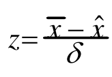

International Standards · ISL
Edition 2009 (v6.0) (version 6.0) · effective 1 January 2009 · superseded
Retrieved on 25 November 2026 from https://www.wada-ama.org/sites/default/files/resources/files/WADA_Int_Standard_Laboratories_2009_EN.pdf
Editions: 2027 (current) · 2021 · 2019 (v10.0) · 2016 (v9.0) · 2015 (v8.0) · 2012 (v7.0) · 2009 (v6.0) · 2008 (v5.0) · 2004 (v4.0)
p. 1
International Standard for Laboratories
January 2009
p. 2
The International Standard for Laboratories was first adopted in June 2003 and became effective on 1 January 2004. The enclosed represents version 6.0 that incorporates revisions to the International Standard for Laboratories that were approved by the World Anti-Doping Agency Executive Committee on 20 September 2008. The revised International Standard for Laboratories is effective as of 1 January 2009.
Published by:
World Anti-Doping Agency Stock Exchange Tower 800 Place Victoria (Suite 1700) PO Box 120 Montreal, Quebec, Canada H4Z 1B7
URL: www.wada-ama.org
Tel: +1 514 904 9232
Fax: +1 514 904 8650
E-mail: info@wada-ama.org
p. 3
PREAMBLE
The World Anti-Doping Code International Standard for Laboratories is a mandatory level 2 International Standard developed as part of the World Anti-Doping Program.
The International Standard for Laboratories version 6.0 will come into effect on January 01, 2009.
The official text of the International Standard for Laboratories shall be maintained by WADA and shall be published in English and French. In the event of any conflict between the English and French versions, the English version shall prevail.
p. 4
p. 5
p. 6
p. 7
PART ONE: INTRODUCTION, CODE PROVISIONS AND DEFINITIONS
1.0 Introduction, Scope and References
The main purpose of the International Standard for Laboratories (ISL) is to ensure laboratory production of valid test results and evidentiary data and to achieve uniform and harmonized results and reporting from all Laboratories.
The ISL includes requirements for obtaining and maintaining WADA accreditation of Laboratories, operating standards for laboratory performance and a description of the accreditation process.
WADA will publish, from time to time, specific technical recommendations in a Technical Document. Implementation of the technical recommendations described in the Technical Documents is mandatory and shall occur by the effective date specified in the Technical Document. Technical Documents supersede any previous publication on a similar topic, or if applicable, this document. The document in effect will be that Technical Document whose effective date most recently precedes that of Sample receipt date. The current version of the Technical Document will be available on WADA's website.
The ISL, including all Annexes and Technical Documents, is mandatory for all Signatories to the Code.
The World Anti-Doping Program encompasses all of the elements needed in order to ensure optimal harmonization and best practice in international and national anti-doping programs. The main elements are: the Code (Level 1), International Standards (Level 2), and Models of Best Practice (Level 3).
In the introduction to the World Anti-Doping Code (Code), the purpose and implementation of the International Standards are summarized as follows:
"International Standards for different technical and operational areas within the anti-doping program will be developed in consultation with the Signatories and governments and approved by WADA. The purpose of the International Standards is harmonization among Anti-Doping Organizations responsible for specific technical and operational parts of the anti-doping programs. Adherence to the International Standards is mandatory for compliance with the Code. The International Standards may be revised from time to time by the WADA Executive Committee after reasonable consultation with the Signatories and governments. Unless provided otherwise in the Code, International Standards and all revisions shall become effective on the date specified in the International Standard or revision."
Compliance with an International Standard (as opposed to another alternative standard, practice or procedure) shall be sufficient to conclude that the procedures covered by the International Standard were performed properly.
This document sets out the requirements for Laboratories that wish to demonstrate that they are technically competent, operate an effective quality management system, and are able to produce forensically valid results. Doping Control testing involves the detection, identification, and in some cases demonstration of the presence greater than a threshold concentration or ratio of measured analytical values (e.g. concentrations, chromatogram peak height or area, etc.) of drugs and other substances in human biological fluids or tissues as identified on the List of Prohibited Substances and Prohibited Methods (The Prohibited List). Laboratories may undertake other forms of testing, within the limits of the Code of Ethics, which are not under the scope of WADA Accreditation (e.g. Equine testing, Forensic testing). Any such testing shall not be covered by WADA Accreditation.
p. 8
The Laboratory accreditation framework consists of two main elements: Part Two of the ISL: the Laboratory accreditation requirements and operating standards; and Part Three: the Annexes. Part Two describes the requirements necessary to obtain WADA recognition and the procedures involved to fulfill the requirements. It also contains an application of ISO/IEC 17025¹ to the field of Doping Control. The purpose of this section of the document is to facilitate consistent application and assessment of ISO/IEC 17025 and the specific WADA requirements for Doping Control by accreditation bodies that operate in accordance with ISO/IEC 17011. The International Standard also sets forth the requirements for Laboratories when adjudication results as a consequence of an Adverse Analytical Finding.
Part Three of the ISL includes all Annexes. Annex A describes the WADA External Quality Assessment Scheme (EQAS), including performance criteria necessary to maintain WADA accreditation. Annex B describes the ethical standards required for continued WADA recognition of the Laboratory. Technical Documents are issued, modified, and deleted by WADA from time to time and provide direction to the Laboratories and other stakeholders on specific technical issues. Once promulgated, Technical Documents become part of the ISL. The incorporation of the provisions of the approved WADA Technical Documents into the Laboratory's quality management system is mandatory for WADA accreditation.
In order to harmonize the accreditation of Laboratories to the requirements of ISO/IEC 17025 and the WADA-specific requirements for recognition, it is expected that national accreditation bodies will use the ISL, including the Annexes and Technical Documents, as reference documents in their assessment process.
Terms defined in the Code, which are included in this standard, are written in italics. Terms, which are defined in the ISL, are underlined.
¹Current version of ISO/IEC 17025
2.0 Code Provisions
The following articles in the Code directly address the ISL:
Code Article 2 ANTI-DOPING RULE VIOLATIONS
2.1 Presence of a Prohibited Substance or its Metabolites or Markers in an Athlete's Sample
p. 9
2.1.1 It is each Athlete's personal duty to ensure that no Prohibited Substance enters his or her body. Athletes are responsible for any Prohibited Substance or its Metabolites or Markers found to be present in their Samples. Accordingly, it is not necessary that intent, fault, negligence or knowing Use on the Athlete's part be demonstrated in order to establish an anti-doping violation under Article 2.1.
[Comment to Article 2.1.1: For purposes of anti-doping rule violations involving the presence of a Prohibited Substance (or its Metabolites or Markers), the Code adopts the rule of strict liability which was found in the Olympic Movement Anti-Doping Code ("OMADC") and the vast majority of pre-Code anti-doping rules. Under the strict liability principle, an Athlete is responsible, and an anti-doping rule violation occurs, whenever a Prohibited Substance is found in an Athlete's Sample. The violation occurs whether or not the Athlete intentionally or unintentionally Used a Prohibited Substance or was negligent or otherwise at fault. If the positive Sample came from an In-Competition test, then the results of that Competition are automatically invalidated (Article 9 (Automatic Disqualification of Individual Results)). However, the Athlete then has the possibility to avoid or reduce sanctions if the Athlete can demonstrate that he or she was not at fault or significant fault (Article 10.5 (Elimination or Reduction of Period of Ineligibility Based on Exceptional Circumstances)) or in certain circumstances did not intend to enhance his or her sport performance (Article 10.4 (Elimination or Reduction of the Period of Ineligibility for Specified Substances under Specific Circumstances)).
The strict liability rule for the finding of a Prohibited Substance in an Athlete's Sample, with a possibility that sanctions may be modified based on specified criteria, provides a reasonable balance between effective anti-doping enforcement for the benefit of all "clean" Athletes and fairness in the exceptional circumstance where a Prohibited Substance entered an Athlete's system through No Fault or Negligence or No Significant Fault or Negligence on the Athlete's part. It is important to emphasize that while the determination of whether the anti-doping rule violation has occurred is based on strict liability, the imposition of a fixed period of Ineligibility is not automatic. The strict liability principle set forth in the Code has been consistently upheld in the decisions of CAS.]
2.1.2 Sufficient proof of an anti-doping rule violation under Article 2.1 is established by either of the following: presence of a Prohibited Substance or its Metabolites or Markers in the Athlete's A Sample where the Athlete waives analysis of the B Sample and the B Sample is not analyzed; or, where the Athlete's B Sample is analyzed and the analysis of the Athlete's B Sample confirms the presence of the Prohibited Substance or its Metabolites or Markers found in the Athlete's A Sample.
[Comment to Article 2.1.2: The Anti-Doping Organization with results management responsibility may in its discretion choose to have the B
8 Sample analyzed even if the Athlete does not request the analysis of the B Sample.]
p. 10
2.1.3 Excepting those substances for which a quantitative threshold is specifically identified in the Prohibited List, the presence of any quantity of a Prohibited Substance or its Metabolites or Markers in an Athlete's Sample shall constitute an anti-doping rule violation.
2.1.4 As an exception to the general rule of Article 2.1, the Prohibited List or International Standards may establish special criteria for the evaluation of Prohibited Substances that can also be produced endogenously.
Code Article 3 PROOF OF DOPING
3.2 Methods of Establishing Facts and Presumptions
3.2.1 WADA-accredited laboratories are presumed to have conducted Sample analysis and custodial procedures in accordance with the International Standard for Laboratories. The Athlete or other Person may rebut this presumption by establishing that a departure from the International Standard for Laboratories occurred which could reasonably have caused the Adverse Analytical Finding.
If the Athlete or other Person rebuts the preceding presumption by showing that a departure from the International Standard for Laboratories occurred which could reasonably have caused the Adverse Analytical Finding, then the Anti-Doping Organization shall have the burden to establish that such departure did not cause the Adverse Analytical Finding.
[Comment to Article 3.2.1: The burden is on the Athlete or other Person to establish, by a balance of probability, a departure from the International Standard for Laboratories that could reasonably have caused the Adverse Analytical Finding. If the Athlete or other Person does so, the burden shifts to the Anti-Doping Organization to prove to the comfortable satisfaction of the hearing panel that the departure did not cause the Adverse Analytical Finding.]
Code Article 6 ANALYSIS OF SAMPLES
Doping Control Samples shall be analyzed in accordance with the following principles:
6.1 Use of Approved Laboratories
For purposes of Article 2.1 (Presence of a Prohibited Substance or its Metabolites or Markers), Samples shall be analyzed only in WADA-accredited laboratories or as otherwise approved by WADA. The choice of the WADA-accredited laboratory (or other laboratory or method approved by WADA) used for the Sample analysis shall be determined exclusively by the Anti-Doping Organization responsible for results management.
[Comment to Article 6.1: Violations of Article 2.1 (Presence of a Prohibited Substance or its Metabolites or Markers) may be established only by Sample analysis performed by a WADA-approved laboratory or another laboratory specifically authorized by WADA. Violations of other Articles may be established using analytical results from other laboratories so long as the results are reliable.]
p. 11
6.2 Purpose of Collection and Analysis of Samples
Samples shall be analyzed to detect Prohibited Substances and Prohibited Methods identified on the Prohibited List and other substances as may be directed by WADA pursuant to Article 4.5 (Monitoring Program), or to assist an Anti-Doping Organization in profiling relevant parameters in an Athlete's urine, blood or other matrix, including DNA or genomic profiling, for anti-doping purposes.
[Comment to Article 6.2: For example, relevant profile information could be used to direct Target Testing or to support an anti-doping rule violation proceeding under Article 2.2 (Use or Attempted Use of a Prohibited Substance), or both.]
6.3 Research on Samples
No Sample may be used for any purpose other than as described in Article 6.2 without the Athlete's written consent. Samples used for purposes other than Article 6.2 shall have any means of identification removed such that they cannot be traced back to a particular Athlete.
6.4 Standards for Sample Analysis and Reporting
Laboratories shall analyze Doping Control Samples and report results in conformity with the International Standard for Laboratories.
6.5 Retesting Samples
A Sample may be reanalyzed for the purpose of Article 6.2 at any time exclusively at the direction of the Anti-Doping Organization that collected the Sample or WADA. The circumstances and conditions for retesting Samples shall conform with the requirements of the International Standard for Laboratories.
[Comment to Article 6.5: Although this Article is new, Anti-Doping Organizations have always had the authority to reanalyze Samples. The International Standard for Laboratories or a new technical document which is made a part of the International Standard will harmonize the protocol for such retesting.]
Code Article 13 APPEALS
13.6 Appeals from Decisions Suspending or Revoking Laboratory Accreditation.
Decisions by WADA to suspend or revoke a laboratory's WADA accreditation may be appealed only by that laboratory with the appeal being exclusively to CAS.
Code Article 14 CONFIDENTIALTIY AND REPORTING
14.1 Information Concerning Adverse Analytical Findings*, Atypical Finding*s, and Other Potential Anti-Doping Rule Violations.
p. 12
14.1.1 Notice to Athletes and Other Persons
An Athlete whose Sample is brought forward as an Adverse Analytical Finding after the initial review under Articles 7.1 or 7.3, or an Athlete or other Person who is asserted to have committed an anti-doping rule violation after the initial review under Article 7.4, shall be notified by the Anti-Doping Organization with results management responsibility as provided in Article 7 (Results Management).
14.1.2 Notice to National Anti-Doping Organizations, International Federations and WADA
The same Anti-Doping Organization shall also notify the Athlete's National Anti-Doping Organization, International Federation and WADA not later than the completion of the process described in Articles 7.1 through 7.4.
14.1.3 Content of Notification
Notification shall include: the Athlete's name, country, sport and discipline within the sport, the Athlete's competitive level, whether the test was In-Competition or Out-ofCompetition, the date of Sample collection and the analytical result reported by the laboratory.
14.1.4 Status Reports
The same Persons and Anti-Doping Organizations shall be regularly updated on the status and findings of any review or proceedings conducted pursuant to Articles 7 (Results Management), 8 (Right to a Fair Hearing) or 13 (Appeals) and shall be provided with a prompt written reasoned explanation or decision explaining the resolution of the matter.
14.1.5 Confidentiality
The recipient organizations shall not disclose this information beyond those Persons with a need to know (which would include the appropriate personnel at the applicable National Olympic Committee, National Federation, and team in a Team Sport) until the Anti-Doping Organization with results management responsibility has made public disclosure or has failed to make public disclosure as required in Article 14.2 below.
[Comment to Article 14.1.5: Each Anti-Doping Organization shall provide, in its own anti-doping rules, procedures for the protection of confidential information and for investigating and disciplining improper disclosure of confidential information by any employee or agent of the Anti-Doping Organization.]
p. 13
3.0 Terms and definitions
3.1 Code defined Terms
ADAMS: The Anti-Doping Administration and Management System is a Web-based database management tool for data entry, storage, sharing, and reporting designed to assist stakeholders and WADA in their anti-doping operations in conjunction with data protection legislation. Adverse Analytical Finding: A report from a laboratory or other *WADA-*approved entity that, consistent with the International Standard for Laboratories and related Technical Documents, identifies in a Sample the presence of a Prohibited Substance or its Metabolites or Markers (including elevated quantities of endogenous substances) or evidence of the Use of a Prohibited Method. Anti-Doping Organization: A Signatory that is responsible for adopting rules for, initiating, implementing or enforcing any part of the Doping Control process. This includes, for example, the International Olympic Committee, the International Paralympic Committee, Major Event Organizations that conduct Testing at their Events, WADA, International Federations, and National Anti-Doping Organizations. Athlete: Any Person who participates in sport at the international level (as defined by each International Federation), the national level (as defined by each National Anti-Doping Organization, including but not limited to those Persons in its Registered Testing Pool), and any other competitor in sport who is otherwise subject to the jurisdiction of any Signatory or other sports organization accepting the Code. All provisions of the Code, including, for example, Testing and therapeutic use exemptions, must be applied to international- and national-level competitors. Some National Anti-Doping Organizations may elect to test and apply anti-doping rules to recreational-level or masters competitors who are not current or potential national caliber competitors. National Anti-Doping Organizations are not required, however, to apply all aspects of the Code to such Persons. Specific national rules may be established for Doping Control for non-international-level or non-national-level competitors without being in conflict with the Code. Thus, a country could elect to test recreational-level competitors but not require therapeutic use exemptions or whereabouts information. In the same manner, a Major Event Organization holding an Event only for masters-level competitors could elect to test the competitors but not require advance therapeutic use exemptions or whereabouts information. For purposes of Article 2.8 (Administration or Attempted Administration) and for purposes of anti-doping information and education, any Person who participates in sport under the authority of any Signatory, government, or other sports organization accepting the Code is an Athlete. [Comment: This definition makes it clear that all international- and national-caliber athletes are subject to the anti-doping rules of the Code, with the precise definitions of international- and national-level sport to be set forth in the anti-doping rules of the International Federations and National Anti-Doping Organizations, respectively. At the national level, anti-doping rules adopted pursuant to the Code shall apply, at a minimum, to all persons on national teams and all persons qualified to compete in any national championship in any sport. That does not mean, however, that all such Athletes must be included in a National Anti-Doping Organization's Registered Testing Pool. The definition also allows each National Anti-Doping Organization, if it chooses to do so, to expand its anti-doping program beyond national-caliber athletes to competitors at lower levels of competition. Competitors at all levels of competition should receive the benefit of anti-doping information and education.]
p. 14
Atypical Finding: A report from a laboratory or other WADA-approved entity which requires further investigation as provided by the International Standard for Laboratories or related Technical Documents prior to the determination of an Adverse Analytical Finding.
Code: The World Anti-Doping Code. Competition: A single race, match, game or singular athletic contest. For example, a basketball game or the finals of the Olympic 100-meter race in athletics. For stage races and other athletic contests where prizes are awarded on a daily or other interim basis the distinction between a Competition and an Event will be as provided in the rules of the applicable International Federation. Doping Control: All steps and processes from test distribution planning through to ultimate disposition of any appeal including all steps and processes in between such as provision of whereabouts information, Sample collection and handling, laboratory analysis, therapeutic use exemptions, results management and hearings. Event: A series of individual Competitions conducted together under one ruling body (e.g., the Olympic Games, FINA World Championships, or Pan American Games). In-Competition: Unless provided otherwise in the rules of an International Federation or other relevant Anti-Doping Organization, "In-Competition" means the period commencing twelve hours before a Competition in which the Athlete is scheduled to participate through the end of such Competition and the Sample collection process related to such Competition. International Standard: A standard adopted by WADA in support of the Code. Compliance with an International Standard (as opposed to another alternative standard, practice or procedure) shall be sufficient to conclude that the procedures addressed by the International Standard were performed properly. International Standards shall include any Technical Documents issued pursuant to the International Standard. Marker: A compound, group of compounds or biological parameter(s) that indicates the Use of a Prohibited Substance or Prohibited Method. Metabolite: Any substance produced by a biotransformation process.
National Anti-Doping Organization: The entity(ies) designated by each country as possessing the primary authority and responsibility to adopt and implement anti-doping rules, direct the collection of Samples, the management of test results, and the conduct of hearings, all at the national level. This includes an entity which may be designated by multiple countries to serve as regional Anti-Doping Organization for such countries. If this designation has not been made by the competent public authority(ies), the entity shall be the country's National Olympic Committee or its designee.
p. 15
National Olympic Committee: The organization recognized by the International Olympic Committee. The term National Olympic Committee shall also include the National Sport Confederation in those countries where the National Sport Confederation assumes typical National Olympic Committee responsibilities in the anti-doping area. Out-of-Competition: Any Doping Control which is not In-Competition. Person: A natural person or an organization or other entity. Prohibited List: The List identifying the Prohibited Substances and Prohibited Methods. Prohibited Method: Any method so described on the Prohibited List. Prohibited Substance: Any substance so described on the Prohibited List. Publicly Disclose or Publicly Report: To disseminate or distribute information to the general public or Persons beyond those Persons entitled to earlier notification in accordance with Article 14. Sample/Specimen: Any biological material collected for the purposes of Doping Control. Signatories: Those entities signing the Code and agreeing to comply with the Code, including the International Olympic Committee, International Federations, International Paralympic Committee, National Olympic Committees, National Paralympic Committees, Major Event Organizations, National Anti-Doping Organizations, and WADA. Tampering: Altering for an improper purpose or in an improper way; bringing improper influence to bear; interfering improperly; obstructing, misleading or engaging in any fraudulent conduct to alter results or prevent normal procedures from occurring; or providing fraudulent information to an Anti-Doping Organization. Testing: The parts of the Doping Control process involving test distribution planning, Sample collection, Sample handling, and Sample transport to the Laboratory. Use: The utilization, application, ingestion, injection or consumption by any means whatsoever of any Prohibited Substance or Prohibited Method. WADA: The World Anti-Doping Agency.
p. 16
3.2 ISL Defined Terms
Aliquot: A portion of the Sample of biological fluid or tissue (e.g., urine, blood, etc.) obtained from the Athlete used in the analytical process.
Analytical Testing: The parts of the Doping Control process involving Sample handling, analysis and reporting following receipt in the Laboratory.
Certified Reference Material: Reference Material, characterized by a metrologically valid procedure for one or more specified properties, accompanied by a certificate that provides the value of the specified property, its associated uncertainty and a statement of metrological traceability.
Confirmation Procedure: An analytical test procedure whose purpose is to identify the presence or concentration of one or more specific Prohibited Substance, Metabolite(s) of a Prohibited Substance, or Marker(s) of the Use of a Prohibited Substance or Method in a Sample. [Comment: A Confirmation Procedure may also indicate a quantity of Prohibited Substance greater than a threshold value and quantify the amount of a Prohibited Substance in a Sample.]
Flexible Scope of Accreditation: Process for a Laboratory to make and implement restricted modifications in the scope of the accreditation prior to the assessment by the national accreditation body. Please see section 4.4.11 for a detailed description of Flexible Scope of Accreditation.
Initial Testing Procedure (Screen Testing Procedure): An analytical test procedure whose purpose is to identify those Samples which may contain a Prohibited Substance, Metabolite(s) of a Prohibited Substance, or Marker(s) of the Use of a Prohibited Substance or Prohibited Method or the quantity of a Prohibited Substance, Metabolite(s) of a Prohibited Substance, or Marker(s) of the Use of a Prohibited Substance or Prohibited Method in excess of a defined threshold.
Intermediate Precision: Variation in results observed when one or more factors, such as time, equipment, and operator are varied within a Laboratory.
International Standard for Laboratories (ISL): The International Standard applicable to Laboratories as set forth herein.
Laboratory Internal Chain of Custody: Documentation of the sequence of Persons in custody of the Sample and any Aliquot of the Sample taken for Analytical Testing. [Comment: Laboratory Internal Chain of Custody is generally documented by a written record of the date, location, action taken, and the individual performing an action with a Sample or Aliquot.]
Laboratory(ies): (A) WADA-accredited laboratory(ies) applying test methods and processes to provide evidentiary data for the detection of Prohibited Substances, Methods and Markers on the Prohibited List, and if applicable, quantification of a Threshold Substance, in urine and other biological Samples in the context of anti-doping activities.
Laboratory Documentation Packages: The material produced by the Laboratory to support an analytical result such as an Adverse Analytical Finding as set forth in the WADA Technical Document for Laboratory Documentation Packages.
p. 17
Major Event: A series of individual international Competitions conducted together under an international multi-sport organization functioning as a ruling body (e.g., the Olympic Games, Pan American Games) and for which a significant increase of resources and capacity is required to conduct Doping Control for the Event as determined by WADA.
Minimum Required Performance Level (MRPL): concentration of a Prohibited Substance or Metabolite of a Prohibited Substance or Marker of a Prohibited Substance or Method that a doping Laboratory is expected to reliably detect and confirm in the routine daily operation of the Laboratory. See Technical Document Minimum Required Performance Levels for Detection of Prohibited Substances.
Non-Threshold Substance: A substance listed on the Prohibited List for which the documentable detection of any amount is considered an anti-doping rule violation.
Presumptive Analytical Finding: The status of a Sample test result for which there is a suspicious result in the Initial Testing Procedure, but for which a confirmation test has not yet been performed.
Reference Collection: A collection of samples of known origin that may be used in the determination of the identity of an unknown substance. For example, a well characterized sample obtained from a verified administration study in which scientific documentation of the identity of Metabolite(s) can be demonstrated.
Reference Material: Material, sufficiently homogeneous and stable with respect to one or more specified properties, which has been established to be fit for its intended use in a measurement process.
Repeatability, sᵣ: Variability observed within a laboratory, over a short time, using a single operator, item of equipment, etc.
Reproducibility, sR: Variability obtained when different Laboratories analyze the same Sample.
Revocation: The permanent withdrawal of a Laboratory's WADA accreditation.
Split Sample: Division of a Sample taken for testing into two portions at collection, usually designated "A" and "B".
Suspension: The temporary withdrawal of a Laboratory's WADA accreditation.
Testing Authority(ies): The International Olympic Committee, World Anti-Doping Agency, International Federation, National Sport Organization, National Anti-Doping Organization, National Olympic Committee, Major Event Organization, or other authority defined by the Code responsible for Sample Testing either In-Competition or Out-of-Competition and/or for management of the test result.
Threshold Substance: A substance listed on the Prohibited List for which the detection and quantification of an amount in excess of a stated threshold is considered an Adverse Analytical Finding.
p. 18
PART TWO: LABORATORY ACCREDITATION REQUIREMENTS AND OPERATING STANDARDS
4.0 Process and Requirements for WADA accreditation
This section describes the specific requirements that a laboratory shall fulfill in the process of applying, obtaining, and maintaining WADA accreditation including requirements for Major Events.
4.1 Applying for a WADA Laboratory Accreditation
4.1.1 Expression of Interest
The candidate laboratory shall officially contact WADA in writing to express its interest in the WADA accreditation process.
4.1.2 Submit initial Application Form
The candidate laboratory shall complete the necessary information in the Application Form as provided by WADA and deliver this to WADA. The Application shall be signed by the Laboratory Director and, if relevant, by the Director of the host organization.
At this stage, WADA will verify the existence of a National Anti-Doping Program (compliant with the Anti-Doping International Standards) in the country where the candidate laboratory is located, the ratification of the UNESCO Convention against Doping in Sport by the host country of the candidate laboratory, as well as the payment of the nation's financial contributions to WADA.
4.1.3 Provide letter(s) of support
Upon successful completion of the above, the candidate laboratory shall be requested by WADA to provide an official letter of support from the responsible National Anti-Doping Organization or, if not established, the National Olympic Committee. The letter of support shall contain as a minimum:
- Guarantee of sufficient annual financial support for a minimum of 3 years;
- Guarantee that, within two (2) years of obtaining accreditation, a minimum of 3000 Samples from Code-compliant clients (as determined by WADA) will be provided annually to the laboratory for 3 years;
- Guarantee that the necessary analytical facilities and instrumentation will be provided.
Any additional information regarding the above shall be given due consideration by WADA. The authority providing the three year letter of support is not restricted to provide exclusive support for only one laboratory.
p. 19
Letters of support from international sport organizations such as International Federations may also be provided in addition to the above-mentioned letters.
If the candidate laboratory, as an organization, is linked to host organizations (e.g. universities, hospitals, private organization…) and/or supported by a public authority, an official letter of support from such authority shall be provided. In addition to the above-mentioned letter from the NADO or NOC, the following information should be provided:
- Documentation of the administrative support for the laboratory;
- Financial support for the laboratory, if relevant;
- Support for the research and development activities;
- Guarantee of provision of necessary analytical facilities and instrumentation.
4.1.4 Description of the Candidate Laboratory
The candidate laboratory shall then complete a detailed questionnaire provided by WADA and submit it to WADA no later than eight weeks following the receipt of the questionnaire. The questionnaire will include, but is not limited to, the following:
- Staff list and their qualifications;
- Description of physical facilities, including a description of the security considerations for Samples and records;
- List of proposed and actual instrumental resources and equipment;
- Method validation data;
- List of available Reference Materials and/or standards, or plans to acquire Reference Materials and/or standards, including properly validated biological Sample Reference Collections;
- Business plan for the laboratory demonstrating commitment to analyse 3000 Samples from Code-compliant Testing Authorities (as determined by WADA) annually, within two (2) years of receiving accreditation;
- List of sponsors of the laboratory.
WADA may require an update of this documentation during the process of accreditation.
4.1.5 Conduct Initial visit
WADA usually conducts an initial visit (2-3 days) to the candidate laboratory at the candidate laboratory's expense. The purpose of this visit is to clarify issues with regard to the accreditation process and the defined requirements in the ISL and to obtain information about different aspects of the laboratory relevant for the accreditation. Such a visit could be conducted prior to or during the accreditation process.
p. 20
4.1.6 Issue final report and recommendation
Within approximately twelve (12) weeks after the initial visit or the receipt of the questionnaire, WADA will complete and submit a report to the candidate laboratory. In the report WADA will make the necessary recommendations with respect to granting the candidate laboratory the status of WADA probationary laboratory or if this is not the case, identifying needed improvements in order to be considered a WADA probationary laboratory.
4.1.7 Initial accreditation fee
Prior to entering the probationary period, the candidate laboratory shall pay to WADA a one time non-refundable fee to cover the costs related to the laboratory initial accreditation process. This fee shall be determined by WADA.
4.1.8 Compliance with the Code of Ethics
The candidate laboratory shall implement and comply with the provision(s) in the Code of Ethics (Annex B) which are relevant for a laboratory in the probationary period. The laboratory shall communicate the Code of Ethics to all employees and ensure understanding of and commitment to the different aspects of the Code of Ethics. The candidate laboratory shall provide to WADA a letter of compliance with the Code of Ethics, signed by the laboratory Director.
4.2 Preparing for WADA Laboratory Accreditation
Prior to entering the probationary period, the candidate laboratory may be required to participate in a pre-probationary test, consisting of at least ten (10) EQAS samples in order to assess its competence at that time. The pre-probationary test may be conducted in conjunction with an initial site visit as described in 4.1.5. The candidate laboratory shall successfully identify and document concentrations in excess of the threshold(s) or Minimum Required Performance Levels (MRPL), as applicable, of the Prohibited Substances, Metabolite(s) of Prohibited Substances, or Marker(s) of Prohibited Substances or Prohibited Methods within a time frame of 10 to 15 working days as determined by WADA. The candidate laboratory shall provide a test report for each of the samples in the pre-probationary test. For negative samples, WADA may request all or a portion of the negative Initial Testing Procedure data. For selected samples for which there is an Adverse Analytical Finding, the candidate laboratory shall provide a Laboratory Documentation Package. Additional data to be provided upon WADA's request. The candidate laboratory's performance in the pre-probationary test shall be taken into consideration by WADA to gauge the laboratory's competence as well as allow WADA to provide feedback on areas in need of improvement. Corrective actions, if any, shall be conducted and reported upon request. Such testing will be taken into account in the overall review of the candidate laboratory's application and may affect the timeliness of the candidate laboratory's entry into the probationary phase of accreditation.
Upon successful completion of the provisions of section 4.1 and following official notification by WADA, a candidate laboratory enters the probationary phase of WADA p. 21 accreditation as a WADA probationary laboratory. The probationary period shall incorporate at least twenty (20) EQAS samples, typically distributed over multiple EQAS rounds, in order to prepare the probationary laboratory for the initial accreditation. During this period, WADA shall provide appropriate feedback to assist the laboratory in improving the quality of its testing process. In this period the laboratory shall successfully complete provisions 4.2.1 to 4.2.5.
4.2.1 Obtain Laboratory ISO/IEC 17025 accreditation
The laboratory shall be accredited by a relevant accreditation body to ISO/IEC 17025 with primary reference to the interpretations and applications of the ISO/IEC 17025 requirements as described in the Application of ISO/IEC 17025 to the Analysis of Urine Doping Control Samples (Section 5.0) and the Application of ISO/IEC 17025 to the Analysis of Blood Doping Control Samples (Section 6.0). The relevant accreditation body shall be an International Laboratory Accreditation Cooperation (ILAC) full member that is a signatory to the ILAC Mutual Recognition Arrangement (ILAC MRA). The laboratory shall prepare and establish the required documentation and system according to the requirements in Application of ISO/IEC 17025 to the Analysis of Urine Doping Control Samples (Section 5.0) and, if necessary, the Application of ISO/IEC 17025 to the Analysis of Blood Doping Control Samples (Section 6.0). Based on this, the laboratory shall initiate and prepare for the accreditation process by consulting with a relevant accreditation body. An assessment by the representative(s) of a relevant accreditation body, including an ISL-trained assessor, shall be conducted. The laboratory shall correct any identified non-conformities within defined time-frames and document this accordingly.
Summaries of the Assessment Report and any documentation of correction of non-conformities, in English or French, should be sent to WADA by the relevant accreditation body. Should the laboratory prefer to send the information directly to WADA, the laboratory shall do so within a reasonable time frame.
The ISO/IEC 17025 accreditation shall be obtained before the end of the probationary period.
4.2.2 Participate in the WADA External Quality Assessment Scheme
During the probationary period the laboratory shall successfully analyze at least twenty (20) EQAS samples in multiple rounds containing a minimum of five samples per set (See Annex A for a description of the EQAS).
After successful completion of the probationary period, as a final proficiency test, the laboratory shall analyze a minimum of 20 EQAS samples in the presence of WADA representatives. The final accreditation test shall assess both the scientific competence and the capability of the laboratory to manage multiple Samples. Costs associated with the WADA on-site visit shall be at the laboratory's expense. The probationary laboratory shall successfully identify and/or document a concentration in excess of the threshold or Minimum Required Performance Level (MRPL) of the Prohibited Substances, Metabolite(s) of Prohibited Substances, or Marker(s) of Prohibited Substances or Prohibited Methods within five (5) calendar days of opening the samples. The probationary laboratory shall provide a Test Report for each of the samples in the proficiency test. For negative samples, WADA may request all or a portion of the negative Initial Testing Procedure data. For selected samples for which there is an Adverse Analytical Finding, the probationary laboratory shall provide a Laboratory Documentation Package. This documentation shall be submitted within two (2) weeks of WADA's request.
p. 22
It is understood that some laboratories already perform routine anti-doping activities under national legislation not yet in line with the UNESCO convention. Such laboratories entering WADA probationary phase shall report Adverse Analytical Findings and provide annual statistics to WADA as per provisions 4.5.1.5, 5.2.6.10, and 5.2.6.11.
4.2.3 Plan and implement research activities
The probationary laboratory shall develop a plan for its research and development activities in the field of Doping Control within a 3 year period including a budget. The probationary laboratory shall demonstrate in its budget an allocation to research and development activities in the field of Doping Control of at least 7% of the annual budget for the initial 3-year period. At least two research and development activities shall be initiated and implemented within the probationary period. The research activities can either be conducted by the laboratory or in cooperation with other WADA accredited Laboratories or other research organizations.
4.2.4 Plan and implement sharing of knowledge
The probationary laboratory shall demonstrate during the probationary period its willingness and ability to share knowledge with other WADA accredited Laboratories. The probationary laboratory shall prepare and convey information and knowledge on at least two specific issues to the other WADA accredited Laboratories within the probationary period. A description of this sharing is provided in the Code of Ethics (Annex B).
4.2.5 Professional liability insurance coverage
Probationary laboratories shall provide documentation to WADA that professional liability risk insurance coverage has been obtained to cover liability to an amount of no less than 2 million USD annually.
4.3 Obtaining WADA Accreditation
4.3.1 Participate in a WADA accreditation audit
In the last phase of the probationary period WADA will prepare in cooperation with the laboratory a final WADA accreditation assessment. Compliance with the defined requirements in the Application of ISO/IEC 17025 to the Analysis of Urine Doping Control Samples (Section 5.0) and if necessary, the Application of ISO/IEC 17025 to the Analysis of Blood Doping Control Samples (Section 6.0) and the practice and documentation of the laboratory will be assessed. If WADA has participated in the initial ISO/IEC 17025 assessment, the final WADA assessment may only consist of a document audit. Otherwise, the audit can be conducted together with the relevant accreditation body or separately if more practical. Should an on-site audit take place by WADA, the associated cost shall be at the laboratory's expense. Based on the audit, WADA will issue an Audit Report and submit this to the laboratory. If applicable, the laboratory shall correct identified non-compliances within defined time-frames and report these to WADA.
p. 23
4.3.2 WADA report and recommendation
Based on the relevant documentation from the laboratory, the Audit Report(s) from WADA representative(s) and the Audit Report(s) from the relevant accreditation body, WADA will make a final report including a recommendation concerning the accreditation of the laboratory. The report and recommendation will be submitted to the WADA Executive Committee for approval. In case that the recommendation is that the laboratory should not be accredited, the laboratory will have a maximum of six (6) months to correct and improve specific parts of their operation, at which time a further report will be made by WADA.
4.3.3 Issue and publication of Accreditation certificate
A certificate signed by a duly authorized representative of WADA shall be issued in recognition of an accreditation. Such certificate shall specify the name of the Laboratory and the period for which the certificate is valid. Certificates may be issued after the effective date, with retroactive effect. A list of accredited Laboratories will be available on WADA's website.
4.4 Maintaining WADA Accreditation
In order for the Laboratory to maintain its accreditation status, the National Anti-Doping Organization and/or NOC shall be declared Code-compliant (as determined by WADA) and the Laboratory host country shall have ratified the UNESCO Convention against Doping in Sport.
4.4.1 Maintain ISO/IEC 17025 accreditation
The Laboratory shall hold an accreditation from the relevant accreditation body, ILAC full member, signatory to ILAC MRA, according to ISO/IEC 17025 with primary reference to the interpretations and applications of the ISO/IEC 17025 requirements as described in the Application of ISO/IEC 17025 to the Analysis of Urine Doping Control Samples (Section 5.0) and if necessary, Application of ISO/IEC 17025 to the Analysis of Blood Doping Control Samples (Section 6.0).
4.4.2 Participate in the WADA External Quality Assessment Scheme
The WADA accredited Laboratories are required to successfully participate in the WADA EQAS which is described in more detail in Annex A.
p. 24
4.4.3 Document Compliance with the WADA Laboratory Code of Ethics
The Laboratory shall annually provide to WADA a letter of compliance with the provisions of the Code of Ethics (Annex B), signed by the Laboratory Director. The Laboratory may be asked to provide documentation of compliance with the provisions of the Code of Ethics (Annex B).
4.4.4 Document implemented research activities
The Laboratory shall maintain a plan for research and development in the field of Doping Control, including an annual budget in this area of at least 7% of the total annual budget.
The Laboratory should document the publication of results of the research in relevant scientific papers in the peer-reviewed literature (at least one publication every two (2) years). The list of scientific papers shall be made available to WADA upon request. The Laboratory may also demonstrate a research program by documenting successful or pending applications for research grants (at least one application submitted every three (3) years).
The Laboratory shall supply an annual progress report to WADA documenting research and development results in the field of Doping Control and dissemination of the results. The Laboratory should also relate research and development plans for the next year.
4.4.5 Document implemented sharing of knowledge
The Laboratory shall demonstrate their willingness and ability to share knowledge with other WADA accredited Laboratories. The Laboratory should make at least one annual contribution to an anti-doping symposium or conference. The Laboratory shall supply an annual report on sharing of knowledge with all other WADA accredited Laboratories. A description of this sharing is provided in the Code of Ethics (Annex B).
4.4.6 Maintain professional liability insurance coverage
Laboratories shall provide documentation to WADA that professional liability risk insurance coverage is maintained to an amount no less than 2 million USD annually.
4.4.7 Provide renewed letter(s) of support
Letter(s) of support, as described in Section 4.1.3, from a National Anti-Doping Organization or National Olympic Committee responsible for a national Doping Control program or an International Federation responsible for an international Doping Control program shall be required in years in which there is an ISO/IEC 17025 re-assessment. For any commitment of less than three years, the National Anti-Doping Organization or National Olympic Committee responsible for a national Doping Control program or an International Federation responsible for an international Doping Control program shall be required to provide letter(s) of support for the Laboratory every year.
p. 25
A letter of support from the host organization renewing its three (3) year commitment to the Laboratory shall also be required in conjunction with each ISO/IEC 17025 re-assessment or be generated and sent to WADA at least every two (2) years.
4.4.8 Minimum number of Samples
In order to maintain proficiency, WADA accredited Laboratories are required, within two (2) years of the effective date of the current version of the ISL, to analyze a minimum of 3000 Doping Control Samples provided annually by Code-compliant Testing Authorities (as determined by WADA). WADA will monitor the number of Samples tested by the Laboratory. If the number of Samples falls below 3000 per year, WADA Laboratory accreditation may be suspended or revoked in accordance with sections 4.4.12.2, 4.4.12.3 and 4.4.13.
4.4.9 Participate in WADA/Accreditation Body re-assessments and surveillance assessments
WADA reserves the right to inspect and assess the Laboratory at any time. The notice of the assessment/inspection will be made in writing to the Laboratory Director. In exceptional circumstances, the assessment/inspection may be unannounced.
4.4.9.1 WADA/Accreditation Body re-assessment
The Laboratory must receive ISO/IEC 17025 accreditation including compliance with the Application of ISO/IEC 17025 for the Analysis of Urine Doping Control Samples (Section 5.0) and if necessary, Application of ISO/IEC 17025 for the Analysis of Blood Doping Control Samples (Section 6.0). The assessment team shall include an ISL-trained assessor within the assessment team selected by the accreditation body for the re-assessment.
Copies of the assessment summary report in English or French as well as the Laboratory responses should be sent in a timely fashion to WADA by the relevant accreditation body. Should the Laboratory prefer sending this information directly to WADA, the Laboratory shall do so within a reasonable time frame.
The Laboratory shall provide a copy of the ISO/IEC 17025 certificate as soon as obtained from the relevant accreditation body.
4.4.9.2 Accreditation Body surveillance assessment
In years when a surveillance ISO/IEC 17025 assessment is required, a copy of the assessment summary report and evidence of corrective actions for any non-compliance(s), in English or French, should be sent to WADA by the relevant accreditation body. Should the Laboratory prefer sending this information directly to WADA, the Laboratory shall do so within a reasonable time frame.
p. 26
4.4.10 Flexible Scope of Accreditation
WADA accredited Laboratories may modify or add analytes to existing scientific methods to expand their scope or develop new methods that involve technology already within the scope of accreditation without the need for approval by the body that completed the ISO/IEC 17025 accreditation of that Laboratory. To have a Flexible Scope of Accreditation, the laboratory must have within its quality management documentation processes for method validation/acceptance, competence of key personnel, record keeping and reporting.
Any new analytical method or procedure to Doping control requiring expertise and technology outside the Laboratory scope of accreditation shall be properly validated by the Laboratory and be determined as Fit-for-purpose by WADA prior to first implementation by any Laboratory into the field of anti-doping analysis. WADA shall use whatever means deemed appropriate, including formal consultation with scientific expert working groups, and/or publication(s) in peer-reviewed scientific journal(s) to evaluate whether the test is Fit-for-purpose prior to providing approval. Before applying such a new method or procedure to the analysis of Doping Control Samples, but after the approval by WADA, the Laboratory shall obtain an extension of the scope of accreditation by a relevant accreditation body.
4.4.11 WADA report and recommendation
WADA will annually review Laboratory compliance with the requirements listed in the ISL. With the exception of re-accreditation and other required on-site assessments, the annual review may consist of a documentation assessment. WADA may require documentation from the Laboratory. Failure of the Laboratory to provide timely information requested in evaluating performance by the specified date shall be considered a refusal to cooperate and may result in Suspension or Revocation of accreditation.
WADA will consider the overall, EQAS and routine performance of the Laboratory in making decisions regarding continued accreditation. The Laboratory's performance on aspects of the standards described in Section 5.0 and/or Section 6.0 (such as turn-around times, Documentation Package contents, and feedback from customer organizations) may be considered in formulating such recommendation.
4.4.11.1 Maintenance of accreditation
In the event that the Laboratory has maintained satisfactory performance, WADA will maintain the accreditation of the Laboratory.
p. 27
4.4.11.2 Suspension of accreditation
Whenever WADA has reason to believe that Suspension may be required and that immediate action is necessary in order to protect the interests of the Anti-Doping Community, WADA may immediately suspend a Laboratory's accreditation. If necessary, such a decision may be taken by the Chairman of the WADA Executive Committee.
Suspension of accreditation may be based on, but not limited to, the following considerations:
- Suspension of ISO/IEC 17025 accreditation;
- Failure to take appropriate corrective action after an unsatisfactory performance either in routine Analytical Testing or in an EQAS test;
- Failure to comply with any of the requirements or standards listed in WADA ISL and/or Technical Documents;
- Failure to cooperate with WADA or the relevant Testing Authority in providing documentation;
- Lack of compliance with the WADA Laboratory Code of Ethics;
- Major changes in key staff without proper and timely notification to WADA;
- Failure to cooperate in any WADA enquiry in relation to the activities of the Laboratory;
- Non-compliances identified from laboratory on-site assessments;
- Loss of support jeopardizing the quality and/or viability of the Laboratory.
WADA may decide upon a Suspension of accreditation at any time based on the results of the EQAS or other evidence of serious deviation(s) of the ISL arising from the routine analysis of Doping Control Samples.
Violations of Laboratory routine performance will be assessed by WADA on a case-by-case basis considering severity and consequences to the Anti-Doping System. In the event of serious violations, WADA reserves the right to organize unannounced audits which may include national accreditation body- and ISL-trained assessors and/or WADA experts.
The period and terms of Suspension shall be proportionate to the seriousness of the non-compliance(s) or lack of performance and the need to ensure accurate and reliable drug testing of Athletes. A period of Suspension shall be up to 6 months, during which time any non-compliance must be corrected, documented and reported to WADA at least six (6) weeks before the end of the Suspension period. Delay in submitting the proper corrective actions may lead to an extension of the Suspension period. If the non-compliance is not corrected during the Suspension period, the Laboratory accreditation will be revoked, unless an extension not to exceed two (2) months is granted by WADA.
p. 28
In the case of a non-compliance, WADA may suspend the Laboratory from performing analyses for any Prohibited Substances. If WADA determines that the non-compliance is limited to a class of Prohibited Substances, WADA may limit the Suspension to analysis for the class of compounds in which the non-compliance occurred.
4.4.11.3 Revocation of accreditation
The WADA Executive Committee shall revoke the accreditation of any Laboratory accredited under these provisions if it determines that Revocation is necessary to ensure the full reliability and accuracy of drug tests and the accurate reporting of test results. Revocation of accreditation may be based on, but not limited to, the following considerations:
- Loss of ISO/IEC 17025 accreditation or repeated Suspensions of ISO/IEC 17025 accreditation;
- Systematic failure to comply with the ISL and/or Technical Documents;
- Serious Laboratory non-compliances identified (e.g. on-site assessments, documented client complaints, other enquiries);
- Repeated failure to take appropriate corrective action following unsatisfactory performance either in routine Analytical Testing or in an EQAS test;
- A serious or repeated violation of the ISL;
- Failure to correct a lack of compliance with any of the requirements or standards listed in the WADA ISL (including Annex A External Quality Assessment Scheme) during a Suspension period;
- Failure to cooperate with WADA or the relevant Testing Authority during the Suspension phase;
- Recurrent non-compliances with the ISL and/or Technical Documents and lack of cooperation with WADA;
- Failure to inform clients of Suspension of accreditation;
- A serious or repeated violation of the Code of Ethics;
- Conviction of any key personnel for any criminal offence committed that is related to the operation of the Laboratory;
- Any other cause that materially affects the ability of the Laboratory to ensure the full reliability and accuracy of drug tests and the accurate reporting of results;
p. 29
- Repeated and/or continuous failure to cooperate in any WADA inquiry in relation to the activities of the Laboratory;
- Loss of support jeopardizing the quality and/or viability of the Laboratory.
A Laboratory whose accreditation has been revoked is ineligible to perform testing of Doping Control Samples for any Testing Authority.
If a Laboratory, whose accreditation has been revoked, should seek a new accreditation, it shall begin the process as a new laboratory as described in Section 4.1; unless there are exceptional circumstances or justifications as determined solely by the WADA Executive Committee. In the case of exceptional circumstances, the WADA Executive Committee shall determine what steps shall be followed prior to granting a new accreditation.
4.4.12 Notification
4.4.12.1 Written Notice
When a Laboratory is suspended or WADA seeks to revoke accreditation, WADA shall immediately serve the Laboratory with written notice of the Suspension or proposed Revocation by facsimile, hand delivery, or registered or certified mail, return receipt requested. This notice shall state the following:
- The reason for Suspension or proposed Revocation;
- The terms of the Suspension or proposed Revocation; and
- The period of Suspension.
4.4.12.2 Effective Date
A Suspension is immediately effective. A proposed Revocation is effective thirty (30) calendar days after the date on the written notice or, if review is requested, upon WADA's decision to uphold the proposed Revocation. A Laboratory who has received notice that its accreditation is in the process of being revoked shall be suspended until the Revocation is made final or is rescinded by WADA. If WADA decides not to uphold the Suspension or proposed Revocation, the Suspension is terminated immediately and any proposed Revocation shall not take place.
4.4.12.3 Public Notice
WADA will immediately notify all relevant national public authorities, National Accreditation Bodies, National Anti-Doping Organizations, National Olympic Committees, International Federations, and the International Olympic Committee of the name and address of any Laboratory that has had its accreditation suspended or revoked, and the name of any Laboratory that has had its Suspension lifted.
p. 30
WADA will provide to any Testing Authority, upon written request, WADA's written decision which upholds or denies the Suspension or proposed Revocation.
WADA's website will be updated regarding a Laboratory's accreditation status.
4.4.13 Re-accreditation Costs
On an annual basis, WADA will invoice the Laboratory for a portion of the costs associated with the re-accreditation process. The Laboratory shall assume the travel and accommodation expenses of the WADA representative(s) in the event of on-site assessments.
4.4.14 Issue and publication of Accreditation certificate
If maintenance of accreditation is approved, the Laboratory shall receive a certificate signed by a duly authorized representative of WADA issued in recognition of such accreditation. Such a certificate shall specify the name of the Laboratory and the period for which the certificate shall be valid. Certificates may be issued after the effective date, with retroactive effect.
4.5 Accreditation Requirements for Major Events
Primarily, Major Event Organizers should consider transporting Samples to the existing facilities of an accredited Laboratory.
In some cases, the reporting time requirements for a Major Event may require that the Laboratory facility be located in proximity to the Competition such that Samples can be delivered by Event Doping Control staff. This may require re-location of an existing Laboratory for a period of time which shall start sufficiently in advance to validate operations at the satellite facility and perform the testing for the Event.
In addition, the Laboratory support for a Major Event may be such that the existing accredited Laboratory facilities are not adequate. This may require re-location of the Laboratory to a new facility, the addition of personnel, and/or the acquisition of additional equipment. The Laboratory Director of the WADA accredited Laboratory designated to perform the testing shall be responsible to ensure that proper quality management system, performance, security and safety are maintained.
In some circumstances, where Samples will be transferred to an existing Laboratory facility, there must be agreement between the Major Event Organizer and the WADA accredited Laboratory in regards whether testing requirements such as turn-around time and the Athlete rights are met for in any eventuality. The Laboratory will, however, be required to report on staffing and equipment issues as required by WADA.
p. 31
If the Laboratory is required to move or extend its operation temporarily to a new physical location, the Laboratory shall demonstrate a valid ISO/IEC 17025 accreditation with primary compliance with the Application of ISO/IEC 17025 to the Analysis of Urine Doping Control Samples (Section 5.0) and if necessary, the Application of ISO/IEC 17025 to the Analysis of Blood Doping Control Samples (Section 6.0) for the new facility or satellite facility.
Any methods or equipment unique to the satellite facility shall be validated prior to the satellite facility accreditation assessment. Any changes to methods or other procedures in the quality manual shall also be validated prior to the assessment.
The Laboratory shall be responsible for providing WADA with regular and timely updates on the progress of the testing facilities.
4.5.1 Major Event Testing in the Laboratory Facilities
4.5.1.1 Participate in an initial WADA/Accreditation Body assessment
WADA may perform one or more site visit(s) to the Laboratory facility as soon as it is available to determine whether the facility is adequate. Expenses related to such a visit shall be at the Laboratory's expense. Particular emphasis will be placed on the adequacy of security considerations, the physical layout of the space to ensure that adequate separation of various parts of the Laboratory are maintained, and to provide a preliminary review of other key support elements and to assess compliance with the ISL.
4.5.1.2 Complete a Pre-Event Report on Facilities and Staff
The Laboratory shall report to WADA all senior personnel temporarily working in the Laboratory. The Laboratory Director shall ensure that these personnel are adequately trained in the methods, policies, and procedures of the Laboratory. Particular emphasis should be given to the Code of Ethics and the confidentiality of the results management process. Adequate documentation of training of these temporary employees shall be maintained by the Laboratory.
At least one (1) month prior to start of testing for the Event, the Laboratory shall provide a report to WADA consisting of the following:
- A valid signed contract between the Laboratory and the responsible Testing Authority / Major Event organizer including the schedule and number of testing to be performed;
- An organizational chart including Laboratory staff and temporary staff scientists employed by the Laboratory for the Event. Supporting information such as job titles and responsibilities shall be included;
- A training plan with timelines for new staff scientists;
p. 32
- A list of instrumental resources and equipment including identification of ownership;
- A summary of the results management process including criteria for determining analytical results (Adverse Analytical Findings, Atypical Findings, etc.);
- Method(s) of reporting the test results in a secure manner to the appropriate authorities.
Any changes that occur prior to the start of Testing for the Major Event should be immediately reported to WADA.
Even if the testing is to be done at the Laboratory's existing facility, the Pre-Event Report shall be completed, particularly in regard to personnel changes and any additional equipment.
4.5.1.3 Review the reports and correct identified non-conformities
The Laboratory shall address and correct all identified non-compliances. The assessment report and documentation of the corrective actions shall be submitted to WADA prior to start of scheduled testing for the Major Event.
4.5.1.4 External Quality Assessment Scheme
WADA may, at its sole discretion, submit EQAS samples to the Laboratory for analysis. The samples shall be analyzed by the same methods used in the testing of Samples from a Major Event Organizer. The use of these EQAS samples may be part of the ISO/IEC 17025 assessment by the relevant accreditation body.
Failure to successfully complete the EQAS will be considered by WADA in deciding whether to accredit the Laboratory for the Major Event. In such event, the Laboratory shall implement, document, and provide to WADA proper corrective action.
The EQAS process should include any additional personnel that are added to the staff for the Major Event. The samples shall be analyzed using the same methods and procedures that will be used for the analysis of Samples for the Major Event.
4.5.1.5 Reporting
All test result reporting shall be in accordance with the confidentiality requirements of the Code.
p. 33
4.5.1.6 Monitoring and assessment during the Major Event
WADA may choose at its sole discretion to have an observer in the Laboratory during the Major Event. The Laboratory Director and staff are expected to provide full cooperation to the observer.
WADA, in conjunction with the Major Event Organization or relevant International Federation, may submit Double Blind EQAS samples to the Laboratory.
In the event of a false positive, the Laboratory will immediately cease testing for that class of Prohibited Substances and Prohibited Methods. The Laboratory shall apply corrective actions within 12 hours of notification of the false positive. All Samples analyzed prior to the false positive will be re-analyzed for the class of Prohibited Substances and Prohibited Methods for which the non-compliance occurred. The results of the investigation and analysis will be presented to WADA within 24 hours unless otherwise agreed in writing.
In the event of a false negative, the Laboratory will be required to investigate the root cause and apply corrective actions within 24 hours of notification of the false negative result. A representative group of Samples in appropriate number to ensure that the risk of false negatives is minimal will be re-analyzed for the class of Prohibited Substances and Prohibited Methods for which the non-compliance occurred. The results of the investigation and analysis will be presented to WADA within 48 hours unless otherwise agreed in writing.
4.5.2 Major Event Testing in satellite Laboratory facilities
In addition to the accreditation requirements for Major Events, satellite laboratories shall also meet the following requirements:
4.5.2.1 Participate in an initial WADA/Accreditation Body assessment
WADA may perform one or more site visit(s) to the Laboratory facility as soon as it is available to determine whether the facility is adequate. Expenses related to such a visit(s) shall be at the Laboratory's expense. Particular emphasis will be placed on the adequacy of security considerations, the physical layout of the space to ensure that adequate separation of various parts of the Laboratory are maintained, and to provide a preliminary review of other key support elements and to assess compliance to the ISL and ISO/IEC 17025.
4.5.2.2 Document ISO/IEC 17025 accreditation of the satellite facility
At least one month prior to the start of scheduled Testing for the Major Event, the Laboratory must provide documentation that the relevant accreditation body has accredited the satellite facility in compliance with the Application of ISO/IEC 17025 to the Analysis of Urine Doping Control Samples (Section 5.0) and if necessary, the Application of ISO/IEC 17025 to the Analysis of Blood Doping Control Samples (Section 6.0). It is a WADA requirement that an ISL trained assessor shall be present at the accreditation body assessment of the satellite facility. Expenses associated with such assessment will be at the Laboratory's expense.
p. 34
4.5.2.3 Participate in WADA accreditation assessment
WADA may choose to perform an on-site assessment or a document assessment of the satellite facility. Should an on-site assessment take place, WADA expenses related to the assessment will be at the Laboratory's expense. This assessment may include analysis of a set of EQAS samples. Particular emphasis will be placed on involvement of new staff members to assess their competence.
4.5.2.4 Issue and publication of a temporary and limited Accreditation certificate
Based on the documentation provided, WADA reserves the right to make a decision regarding accreditation of the Laboratory. In the event that accreditation is awarded, WADA shall issue an accreditation for the period of the Major Event and an appropriate time before and after the actual Competition.
In the event that the accreditation is not awarded, it is the responsibility of the Testing Authority/ Major Event Organizer to activate a contingency plan in order to ensure analysis of Samples in compliance with ISL requirements.
p. 35
5.0 Application of ISO/IEC 17025 to the Analysis of Urine Doping Control Samples
5.1 Introduction and Scope
This section of the document is intended as an application as described in Annex B.4 (Guidelines for establishing applications for specific fields) of ISO/IEC 17025 to the field of Doping Control. Any aspect of testing or management not specifically discussed in this document shall be governed by ISO/IEC 17025. The application focuses on the specific parts of the processes that are critical with regard to the quality of the laboratory's performance as a WADA-accredited laboratory and are therefore determined to be significant in the evaluation and accreditation process.
This section introduces the specific performance standards for a WADA-accredited laboratory. The conduct of testing is considered a process within the definitions of ISO 17000. Performance standards are defined according to a process model where the Laboratory practice is structured into three main categories of processes:
- Analytical and technical processes;
- Management processes;
- Support processes.
Wherever possible, the application will follow the format of the ISO/IEC 17025 document. The concepts of the quality management system, continuous improvement, and customer satisfaction have been included.
5.2 Analytical and Technical Processes
5.2.1 Receipt of Samples
5.2.1.1 Samples may be received by any method acceptable within the concepts of the International Standard for Testing.
5.2.1.2 The transport container shall first be inspected and any irregularities recorded.
5.2.1.3 The transfer of the Samples from the courier or other person delivering the Samples shall be documented including at a minimum, the date, the time of receipt, and the name and signature of the Laboratory representative receiving the Samples. This information shall be included into the Laboratory Internal Chain of Custody record.
5.2.2 Handling and Retention of Samples
5.2.2.1 The Laboratory shall have a system to uniquely identify the Samples and associate each Sample with the collection document or other external chain of custody.
p. 36
5.2.2.2 The Laboratory shall have Laboratory Internal Chain of Custody procedures to maintain control of and accountability for Samples from receipt through final disposition of the Samples. The procedures shall incorporate the concepts presented in the applicable WADA Technical Document for Laboratory Internal Chain of Custody.
5.2.2.3 The Laboratory shall observe and document conditions that exist at the time of receipt that may adversely impact on the integrity of a Sample. For example, irregularities noted by the Laboratory should include, but are not limited to:
- Sample tampering is evident;
- Sample is not sealed with tamper-resistant device or not sealed upon receipt;
- Sample is without a collection form (including Sample identification code) or a blank form is received with the Sample;
- Sample identification is unacceptable. For example, the number on the bottle does not match the Sample identification number on the form;
- Sample volume is inadequate to perform the requested testing menu;
- Sample transport conditions are not consistent with preserving the integrity of the Sample for anti-doping analysis.
5.2.2.4 The Laboratory shall notify and seek instructions from the Testing Authority regarding rejection or testing of Samples for which irregularities are noted. If applicable, any agreement between a Testing Authority and Laboratory that establishes Sample rejection criteria shall be documented.
5.2.2.5 In cases where the Laboratory receives more than two Samples, which are linked to a single Athlete according to the Doping control form(s), the Laboratory should prioritize the analysis of the first and last Samples collected.
- The Laboratory may conduct further analyses on the intermediary Samples collected if deemed necessary in consultation with the Testing Authority.
- The Laboratory may combine Aliquots from multiple Samples, which are linked to a single Athlete according to the Doping Control form(s), if necessary to conduct a proper analysis.
5.2.2.6 The Laboratory shall retain the "A" and "B" Sample(s) without an Adverse Analytical Finding or Atypical Finding for a minimum of three
(3) months after the final analytical ("A" Sample) report is p. 37 transmitted to the Testing Authority. The Sample(s) shall be stored frozen during the long term storage.
Samples with irregularities shall be stored frozen for a minimum of three (3) months following the report to the Testing Authority.
After the applicable storage period, from a minimum of three (3) months, or up to a maximum of eight (8) years if and as requested by the Testing Authority, the Laboratory shall either make the Samples anonymous for research purposes (with proper consent from the Athlete) or dispose of the Samples. Samples used for research purposes shall have any means of identification removed or be transferred into an anonymous container such that they cannot be traced back to a particular Athlete. Disposal of Samples shall be conducted and recorded under the Laboratory Internal Chain of Custody.
5.2.2.7 The Laboratory shall retain frozen the "A" and "B" Sample(s) with an Adverse Analytical Finding for a minimum of three (3) months after the final analytical report is transmitted to the Testing Authority or as long as necessary pending the conclusion of a longitudinal study.
5.2.2.8 If the Laboratory has been informed by the Testing Authority that the analysis of a Sample is challenged, disputed or under longitudinal investigation, the Sample shall be stored frozen and all the records pertaining to the Testing of that Sample shall be stored until completion of any challenges.
5.2.2.9 The Laboratory shall maintain a policy pertaining to retention, release, and disposal of Samples and Aliquots.
5.2.2.10 The Laboratory shall maintain custody information on the transfer of Samples, or portions thereof to another Laboratory.
5.2.2.11 In cases where both "A" and "B" Samples have been analyzed as part of the anti-doping procedure and the reporting of an Adverse Analytical Finding(s), the Laboratory shall either make the Samples anonymous for research purposes (with proper consent from the Athlete) or dispose of the Samples. Samples used for research purposes shall have any means of identification removed or be transferred into an anonymous container such that they cannot be traced back to a particular Athlete. Disposal of Samples shall be conducted and recorded under the Laboratory Internal Chain of Custody.
5.2.2.12 Re-sealing of Samples for long-term storage and re-testing
5.2.2.12.1 Samples which have tested negative
p. 38
5.2.2.12.1.1 Where sufficient urine remains in "A" Sample for possible re-testing.
In cases where a Sample has been reported negative by the Laboratory following the analysis of the "A" Sample, the remainder of the "A" Sample and the sealed "B" Sample shall be stored frozen by the Laboratory in a secure location under a continuous chain of custody for the purpose of possible re-testing. The re-testing in such cases shall follow the regular Testing procedure.
5.2.2.12.1.2 Where no urine remains of "A" Sample for possible re-testing.
After a Sample has been reported negative by the Laboratory following the analysis of the "A" Sample, and there is no remainder of the "A" Sample, the sealed "B" Sample shall remain stored frozen by the Laboratory in a secure location, under a continuous chain of custody, for the purpose of re-testing.
The opportunity shall be offered to the Athlete, or to the representative of the Athlete to be present at the opening of the sealed "B" bottle. If the Athlete declines to be present or the Athlete's representative does not respond to the invitation or if the Athlete or the Athlete's representative continuously claim not to be available on the date of the opening, despite reasonable attempts by the Laboratory to accommodate their dates, over a period not to exceed 7 working days, the Laboratory shall proceed regardless and appoint an independent witness to verify the opening of the sealed "B" Sample.
When opening the "B" Sample, the Laboratory will divide the Sample into two bottles and the Athlete or the Athlete's representative will be invited to seal one of the bottles using a tamper proof evident method. If the analysis of the first bottle reveals an Adverse Analytical Finding, a confirmation shall be undertaken, if requested by the Athlete or his/her representative, using the second bottle.
5.2.2.12.2 Sample where the "A" and the "B" bottles have been opened and not re-sealed according to procedure as per 5.2.2.12.1.2.
The Samples shall be handled as per ISL section 5.2.2.11.
p. 39
5.2.3 Sampling and Preparation of Aliquots for Analysis
5.2.3.1 The Laboratory shall maintain paper or electronic Laboratory Internal Chain of Custody procedures for control of and accountability for all Aliquots and other subsamples and transfers from preparation through disposal. The procedures shall incorporate the concepts presented in the WADA Technical Document for Laboratory Internal Chain of Custody.
5.2.3.2 Before the initial opening of a Sample bottle, the device used to ensure the integrity of the Sample (e.g., security tape or a bottle sealing system) shall be inspected and the integrity documented.
5.2.3.3 The Aliquot preparation procedure for any Initial Testing Procedure or Confirmation Procedure shall ensure that no risk of contamination of the Sample or Aliquot exists.
5.2.4 Analytical Testing
5.2.4.1 Urine analysis for adulteration or manipulation
5.2.4.1.1 The Laboratory shall only note any unusual condition of the urine - for example: color, odor, turbidity or foam. Any unusual conditions should be recorded and included as part of the report to the Testing Authority.
5.2.4.1.2 The Laboratory shall measure the pH and specific gravity. Other tests that may assist in the evaluation of adulteration or manipulation may be performed if deemed necessary.
5.2.4.2 Urine Initial Testing Procedure
5.2.4.2.1 The Initial Testing Procedure(s) shall detect the Prohibited Substance(s) or Metabolite(s) of Prohibited Substance(s), or Marker(s) of the Use of a Prohibited Substance or Prohibited Method for all substances covered by the Prohibited List for which there is a method that is Fit-forpurpose. WADA may make specific exceptions to this section for specialized techniques that are not required to be within the scope of accreditation of all Laboratories.
5.2.4.2.2 The Initial Testing Procedure shall be performed with a Fit-for-purpose method for the Prohibited Substance or Prohibited Method being tested. A characteristic of the Initial Testing Procedure is to obtain information about the potential presence of Prohibited Substance(s) or Metabolite(s) of Prohibited Substance(s), or Marker(s) of the Use of a Prohibited Substance or Prohibited Method. Results from Initial Testing Procedures can be included as p. 40 part of longitudinal studies (such as endogenous steroid profiles) provided that the method is appropriately validated.
5.2.4.2.3 All batches undergoing the Initial Testing Procedure shall include appropriate negative and positive controls in addition to the Samples being tested.
5.2.4.2.4 For Threshold Substances, appropriate controls near the threshold shall be included in the Initial Testing Procedures. Initial Testing Procedures are not required to consider uncertainty of measurement.
5.2.4.3 Urine Confirmation Procedure
All Confirmation Procedures shall be documented. The objective of the Confirmation Procedure is to accumulate additional information to support an Adverse Analytical Finding. A Confirmation Procedure shall have equal or greater selectivity/discrimination than the Initial Testing Procedure.
5.2.4.3.1 "A" Sample Confirmation
5.2.4.3.1.1 A Presumptive Analytical Finding from an Initial Testing Procedure of a Prohibited Substance, Metabolite(s) of a Prohibited Substance, or Marker(s) of the Use of a Prohibited Substance or Prohibited Method shall be confirmed using an additional Aliquot(s) taken from the original "A" Sample.
For sections S.3 Beta-2 Agonists and S.9 Glucucorticosteroids of the Prohibited List only, and if requested by the Testing Authority, a Laboratory may report a Presumptive Analytical Finding to enquire whether an approved Therapeutic Use Exemption (TUE) exists for the Prohibited Substance(s) detected. Decision by the Testing Authority shall be retained as part of the record.
5.2.4.3.1.2 Mass spectrometry (MS) coupled to either gas (GC) or liquid chromatography (LC) is the analytical technique of choice for confirmation of Prohibited Substances, Metabolite(s) of a Prohibited Substance, or Marker(s) of the Use of a Prohibited Substance or Prohibited Method. GC or High Performance Liquid Chromatography (HPLC) coupled with MS or MS-MS are acceptable for both Initial Testing Procedures and Confirmation Procedures for a specific analyte.
p. 41
5.2.4.3.1.3 Immunoassays are also routinely used for detection of macromolecules in urine samples. Immunoassays applied for the Initial Testing Procedures and Confirmation Procedures shall use antibodies recognizing different epitopes of the macromolecule analyzed, unless a purification or separation method is used prior to application of the immunoassay to eliminate the potential of cross-reactivity.
In assays which include multiple antibodies (such as sandwich immunoassays), only one of the antibodies (either capture or detection) used in the immunoassays applied for the Initial Testing Procedures and Confirmation Procedures must differ for antigenic epitope specificity. The other antibody may be used in both immunoassays.
For analytes that are too small to have two independent antigenic epitopes, two different purification methods or two different analytical methods shall be applied.
Multiplexed immunoassays, protein chips, and similar simultaneous multi-analyte testing approaches may be used. The Initial Testing Procedures and Confirmation Procedures may be performed simultaneously in the same Aliquot providing that the same preconditions described above for assay antibody specificity or methods of purification or separation are met.
5.2.4.3.1.4 The Laboratory shall have a policy to define those circumstances where the Confirmation Procedure for an "A" Sample may be repeated (e.g., batch quality control failure) and the first test result shall be nullified. Each repeat confirmation shall be documented and be completed on a new Aliquot of the "A" Sample.
5.2.4.3.1.5 If more than one Prohibited Substance, Metabolite(s) of a Prohibited Substance, or Marker(s) of the Use of a Prohibited Substance or Prohibited Method is identified by the Initial Testing Procedures, the Laboratory shall confirm as many of the Presumptive Analytical Findings as possible. The decision on the prioritization for the confirmation(s) shall be made to give precedent to non-specified substance(s) and the decision should be made in cooperation with the Testing Authority and documented. In addition, no p. 42 final written Test Report incorporating a Presumptive Analytical Finding shall be issued unless authorized by the Testing Authority in relation to the existence of an approved Therapeutic Exemption (TUE) for the Prohibited Substance.
5.2.4.3.1.6 The mean value of the results of three Aliquots for the "A" Sample finding for Threshold Substances minus the value of the measurement uncertainty determined by the Laboratory must exceed the relevant Threshold. If insufficient Sample volume exists to analyze three Aliquots, the maximum number of Aliquots that can be prepared should be analyzed. Adverse Analytical Finding or Atypical Finding decisions shall be based on the mean of the measured concentrations or ratios of measured analytical values (e.g. concentrations, chromatogram peak heights or areas, etc.), taking into account the measurement uncertainty with the coverage factor, k, and a level of confidence of 95%. Reports and documentation shall give the mean concentration or ratio of measured analytical values with the associated uncertainty.
5.2.4.3.2 "B" Sample Confirmation
5.2.4.3.2.1 The "B" Sample analysis should occur as soon as possible and shall take place no later than seven (7) working days starting the first working day following notification of an "A" Sample Adverse Analytical Finding by the Laboratory. If the Laboratory is unable to perform the "B" analysis within this time frame for technical or logistical reason(s), this shall not be considered as a deviation from the ISL susceptible to invalidate the analytical procedure and analytical results. The Laboratory shall proceed as described above unless informed within the seven (7) working day time frame that the Athlete has waived his/her right to the "B" confirmation analysis and accepts the findings of the "A" confirmation analysis.
5.2.4.3.2.2 The "B" Sample confirmation shall be performed in the same Laboratory as the "A" Sample confirmation.
5.2.4.3.2.3 If the "B" Sample confirmation proves negative, the entire test shall be considered negative.
p. 43
5.2.4.3.2.4 For exogenous Threshold Substances, the "B" Sample results need only confirm the "A" Sample identification for the Adverse Analytical Finding to be valid.
5.2.4.3.2.5 For endogenous Threshold Substances, the mean value of the results of three Aliquots for the "B" Sample finding minus the value of estimated measurement uncertainty determined by the Laboratory, must exceed the relevant threshold. Adverse Analytical Finding or Atypical Finding decisions shall be based on the mean of the measured concentrations and/or ratio of measured analytical values, taking into account the measurement uncertainty with the coverage factor, k, and a level of confidence of 95%. If insufficient Sample volume exists to analyze three Aliquots, the maximum number of Aliquots that can be prepared should be analyzed.
5.2.4.3.2.6 The Athlete and/or his/her representative, a representative of the entity responsible for Sample collection or results management, a representative of the National Olympic Committee, National Sport Federation, International Federation, and a translator shall be authorized to attend the "B" confirmation.
If the Athlete declines to be present or the Athlete's representative does not respond to the invitation or if the Athlete or the Athlete's representative continuously claim not to be available on the date of the opening, despite reasonable attempts by the Laboratory to accommodate their dates, over a period not to exceed 7 working days, the Testing Authority or the Laboratory shall proceed regardless and appoint an independent witness to verify that the "B" Sample container shows no signs of Tampering and that the identifying numbers match that on the collection documentation. At a minimum, the Laboratory Director or representative and the Athlete or his/her representative or the independent witness shall sign Laboratory documentation attesting to the above.
The Laboratory Director may limit the number of individuals in Controlled Zones of the Laboratory based on safety or security considerations.
p. 44
The Laboratory Director may remove, or have removed by proper authority, any Athlete or representative(s) interfering with the testing process. Any behavior resulting in removal shall be reported to the Testing Authority and may be considered an anti-doping rule violation in accordance with Article 2.5 of the Code, "Tampering, or Attempting to tamper, with any part of Doping
Control".
5.2.4.3.2.7 Aliquots taken for "B" Confirmation Procedure shall be taken from the original "B" Sample.
The Laboratory shall ensure that the "B" Sample is properly resealed as per provision 5.2.2.12.
5.2.4.3.2.8 The Laboratory shall have a policy to define those circumstances when Confirmation Procedure for the "B" Sample may be repeated (e.g. batch quality control failure) and the first test result shall be nullified. Each repeat confirmation should be performed on a new Aliquot of the "B" Sample and new controls.
5.2.4.3.2.9 If the "B" Sample confirmation proves negative, the Sample shall be considered negative and the Testing Authority, WADA and the International Federation notified of the new analytical finding.
5.2.4.4 Alternative biological matrices.
Any testing results obtained from hair, nails, oral fluid or other biological material shall not be used to counter Adverse Analytical Findings or Atypical Findings from urine.
5.2.5 Results Management
5.2.5.1 Review of results
5.2.5.1.1 A minimum of two certifying scientists shall independently review all Adverse Analytical Findings and Atypical Findings before a report is issued. The review process shall be recorded.
5.2.5.1.2 At a minimum, the review shall include:
- Laboratory Internal Chain of Custody documentation;
- Validity of the analytical initial and confirmatory data and calculations;
- Quality control data;
p. 45
- Completeness of documentation supporting the reported analytical findings.
5.2.5.1.3 When an Adverse Analytical Finding or Atypical Finding is rejected, the reason(s) shall be recorded.
5.2.6 Documentation and Reporting
5.2.6.1 The Laboratory shall have documented procedures to ensure that it maintains a coordinated record related to each Sample analyzed. In the case of an Adverse Analytical Finding or Atypical Finding, the record shall include the data necessary to support the conclusions reported. In general, the record should be such that in the absence of the analyst, another competent analyst could evaluate what tests had been performed and interpret the data.
5.2.6.2 Each step of testing shall be traceable to the staff member who performed that step.
5.2.6.3 Significant variance from the written procedure shall be documented as part of the record (e.g., memorandum for the record).
5.2.6.4 Where instrumental analyses are conducted, the operating parameters for each run shall be included as part of the record.
5.2.6.5 Reporting of "A" Sample results should occur within ten (10) working days of receipt of the Sample. The reporting time required for specific Competitions may be substantially less than ten days. The reporting time may be altered by agreement between the Laboratory and the Testing Authority.
5.2.6.6 A single, distinct Test Report shall be generated to document the Adverse Analytical Finding(s) or Atypical Finding(s) of an individual Sample. The Laboratory Test Report shall include, in addition to the items stipulated in ISO/IEC 17025, the following:
- Customer Sample identification code;
- Laboratory identification code;
- Type of test (Out of Competition/In-Competition);
- Sport and/or discipline
- Name of Competition and/or Customer reference code (for example: ADAMS test mission code), if provided;
- Date of receipt of Sample;
- Date of report;
- Sex of the Athlete;
- Type of Sample (urine, blood, etc.);
p. 46
- Test results (for Threshold Substances: the mean value, units, uncertainty details and reporting threshold shall be included);
- Signature of authorized individual;
- Other information as specified by the Testing Authority and/or WADA.
At a minimum, labelling and information provided by the Laboratory related to the type of test, sport/discipline, test results (including comments/opinions) and client to whom the report is addressed shall also be provided in English on the test report.
5.2.6.7 The Laboratory is not required to measure or report a concentration for Prohibited Substances for a non-threshold analyte in urine Samples. The Laboratory shall report the actual Prohibited Substance(s), Metabolite(s) of the Prohibited Substance(s) or Prohibited Method(s), or Marker(s) detected in the urine Sample.
For Threshold Substances in urine Samples, the Laboratory report shall establish that the Prohibited Substance or its Metabolite(s) or Marker(s) of a Prohibited Method is present at a concentration and/or ratio of measured analytical values greater than the threshold (taking into consideration the value of measurement uncertainty for the "A" Sample confirmation and also the "B" Sample confirmation of endogenous Threshold Substances).
5.2.6.8 The Laboratory should qualify the result(s) in the Test Report as an Adverse Analytical Finding or "No Prohibited Substance(s) on Test menu detected". For substances requiring follow-up and that cannot be confirmed as coming from an exogenous source, the Laboratory shall qualify the result as an Atypical Finding in the Test Report.
5.2.6.9 The Laboratory shall have a policy regarding the provision of opinions and interpretation of data. An opinion or interpretation may be included in the Test Report provided that the opinion or interpretation is clearly identified as such. The basis upon which the opinion has been made shall be documented.
Note: An opinion or interpretation may include, but not be limited to, recommendations on how to use results, information related to the pharmacology, metabolism and pharmacokinetics of a substance, whether the observed results may suggest the need for additional Testing and whether an observed result is consistent with a set of reported conditions.
5.2.6.10 In addition to reporting to the Testing Authority, the Laboratory shall simultaneously report any Adverse Analytical Findings ("A" and "B" results) to WADA and the responsible International Federation (and/or to the owner of the Event in the case of Major International
p. 47
Events). Atypical Findings shall be simultaneously reported to the Testing Authority and WADA. Documented instructions from the Testing Authority, with regard to a Presumptive Analytical Finding, shall also be reported to WADA. In the case where the sport or Event is not associated with an International Federation (e.g., Professional Leagues, University and College sports) the Laboratory shall report Adverse Analytical Findings to the Testing Authority and to WADA. All reporting shall be in accord with the confidentiality requirements of the Code.
5.2.6.11 The Laboratory, upon request by Testing Authorities, may be asked to review data from longitudinal studies which include an Atypical Finding(s). Following review of the applicable data, a report and recommendation shall be made by the Laboratory to the Testing Authority as to whether the data supports an Adverse Analytical Finding or not. If the Testing Authority has concluded an Adverse Analytical Finding, the Laboratory will be informed and shall conduct the "B" confirmation analysis according to 5.2.4.3.2.1.
5.2.6.12 The Laboratory shall report quarterly to WADA, in a format specified by WADA, a summary of the results of all tests performed. No information that could link an Athlete with an individual result will be included. The report will include a summary of any Samples rejected for testing and the reason for the rejection.
When the clearinghouse (ADAMS) is in place, the Laboratory shall simultaneously report via such system to WADA all material information reported to the Testing Authority, according to the requirements listed in Section 5.2.6.6, in lieu of the paragraph above. The information will be used to generate summary reports.
5.2.6.13 The documentation package should be provided by the Laboratory only to the relevant result management authority upon request and should be provided within 10 working days of the request. Laboratory Documentation Packages shall be in compliance with the WADA Technical Document on Laboratory Documentation Packages.
5.2.6.14 Athlete confidentiality shall be a key concern for all Laboratories engaged in Doping Control cases.
5.2.6.14.1 Testing Authority requests for information shall be made in writing to the Laboratories.
5.2.6.14.2 Adverse Analytical Findings and Atypical Findings shall not be provided by telephone.
5.2.6.14.3 Information sent by a facsimile is acceptable if the security of the receiving facsimile machine has been verified and p. 48 procedures are in place to ensure that the facsimile has been transmitted to the correct facsimile number.
5.2.6.14.4 Unencrypted email is not authorized for any reporting or discussion of Adverse Analytical Findings or Atypical Findings if the Athlete can be identified or if any information regarding the identity of the Athlete is included.
5.2.6.14.5 The Laboratory shall also provide any information requested by WADA in conjunction with the Monitoring Program, as set forth in Article 4.5 of the Code.
5.3 Quality Management Processes
5.3.1 Organization
5.3.1.1 Within the framework of ISO/IEC 17025, the Laboratory shall be considered as a testing Laboratory.
5.3.1.2 The administrative and operational activities of the Laboratory, as well as the hosting facility, should be independent from the Anti-Doping Organization(s) providing support (e.g. financial, Samples, facilities) to the Laboratory.
5.3.1.3 The Laboratory Director shall have the responsibilities of the Chief Executive, unless otherwise noted.
5.3.2 Quality Policy and Objectives
5.3.2.1 The Quality Policy and implementation shall meet the requirements of ISO/IEC 17025 Section 4.2 Management System and shall include a quality manual that describes the quality system.
5.3.2.2 A single staff member should be appointed as the Quality Manager and shall have responsibility and authority to implement and ensure compliance with the quality system.
5.3.3 Document Control
The control of documents that make up the Management System shall meet the requirements of ISO/IEC 17025 Section 4.3 Document Control.
5.3.3.1 The Laboratory Director (or designee) shall approve the Quality Manual and all other documents used by staff members in completing testing.
5.3.3.2 The Management System shall ensure that the contents of WADA Technical Documents are incorporated into the appropriate manuals by the effective date and that training is provided and recorded. If p. 49 this is not possible, WADA shall be contacted with a written request for an extension.
5.3.4 Review of requests, tenders, and contracts
Review of legal documents or agreements related to testing shall meet the requirements of ISO/IEC 17025 Section 4.4.
The Laboratory shall ensure that the Testing Authority is informed concerning the Prohibited Substances that can be detected under the scope of accreditation in Samples submitted for analysis.
5.3.5 Subcontracting of tests
A WADA accredited Laboratory shall perform all work with qualified personnel and equipment within its accredited facility.
In the case of specific technologies that may not be available in the Laboratory, a Sample may be transferred to another WADA accredited Laboratory where the specific technology is within the scope of its accreditation. In exceptional circumstances, WADA may elect to grant specific authorization for subcontracting parts of the tasks. In such cases, assurance of the maintenance of the level of quality and the appropriate chain of custody throughout the entire process is the responsibility of the Laboratory Director. Such arrangements shall be clearly documented as part of the permanent Sample record and included in the Laboratory Documentation Package, if applicable.
5.3.6 Purchasing of services and supplies
5.3.6.1 Chemicals and reagents
Chemicals and reagents shall be suitable for the purpose of the analysis and be of established purity. Reference purity documentation shall be obtained when available and retained in the quality system documents. Chemicals, reagents and kits labelled "Research Only" may be utilized for the purposes of Doping Control as long as they are validated by the Laboratory.
In the case of rare or difficult to obtain reagents, Reference Materials, or Reference Collections, particularly for use in qualitative methods, the expiration date of the solution can be extended if adequate documentation exists confirming that no significant deterioration that would preclude obtaining an acceptable mass spectrum has occurred or that purification has been performed.
5.3.6.2 Waste disposal shall be in accord with national laws and other relevant regulations. This includes biohazard materials, chemicals, controlled substances, and radioisotopes, if used.
p. 50
5.3.6.3 Environmental health and safety policies shall be in place to protect the staff, the public, and the environment.
5.3.7 Service to the customer
5.3.7.1 Service to customers shall be handled in accord with ISO/IEC 17025 Section 4.7.
5.3.7.2 Ensuring responsiveness to WADA
The Laboratory Director or his/her designee shall:
- Ensure adequate communication;
- Report to WADA any unusual circumstances or information with regard to testing programs, patterns of irregularities in Samples, or potential use of new substances;
- Provide complete and timely explanatory information to WADA as appropriate and as requested to provide quality accreditation.
5.3.7.3 Ensuring responsiveness to Testing Authority
5.3.7.3.1 The Laboratory Director shall be familiar with the Testing Authority rules and the Prohibited List.
5.3.7.3.2 The Laboratory Director shall interact with the Testing Authority with respect to specific timing, report information, or other support needs. These interactions should include, but are not limited to, the following:
- Communicating with the Testing Authority concerning any significant question of testing needs or any unusual circumstance in the testing process (including delays in reporting);
- Acting without bias regarding the national affiliation of the Testing Authority;
- Providing complete and timely explanations to the Testing Authority when requested or when there is a potential for misunderstanding the Test Report or Laboratory Documentation Package;
- Providing evidence and/or expert testimony on any test result or report produced by the Laboratory as required in administrative, arbitration, or legal proceedings;
- Responding to any comment or complaint submitted by a Testing Authority or Anti-Doping Organization concerning the Laboratory and its operation.
5.3.7.3.3 The Laboratory shall actively monitor the quality of the services provided to the relevant anti-doping authorities. There should be documentation that the Testing Authority p. 51 concerns have been incorporated into the Laboratory Management System where appropriate.
5.3.7.3.4 The Laboratory shall develop a system, as required by ISO/IEC 17025 for monitoring Laboratory service.
5.3.8 Complaints
Complaints shall be handled in accordance with ISO/IEC 17025 Section 4.8.
5.3.9 Control of nonconforming testing work
5.3.9.1 The Laboratory shall have policies and procedures that shall be implemented when any aspect of its testing or a result from its testing does not comply to set procedures.
5.3.9.2 Documentation of any non-compliance or departure from procedure or protocol involving a Sample testing shall be kept as part of the permanent record of that Sample.
5.3.10 Improvement
The Laboratory shall continually improve the effectiveness of its management system in accordance with ISO/IEC 17025 Section 4.10.
5.3.11 Corrective action
Corrective action shall be taken in accordance with ISO/IEC 17025 Section 4.11.
5.3.12 Preventive action
Preventive action shall be taken in accordance with ISO/IEC 17025 Section 4.12.
5.3.13 Control of records
5.3.13.1 Technical Records
5.3.13.1.1 Analytical records on negative Samples, including Laboratory Internal Chain of Custody documentation and the endogenous steroid profile, shall be retained in secure storage for at least two (2) years. Analytical records on Samples with irregularities or on rejected Samples shall be retained in secure storage for at least two (2) years.
5.3.13.1.2 All analytical records on Samples with an Adverse Analytical Finding, as described in Section 5.2.5.1.2, shall be retained in secure storage for at least eight (8) years.
5.3.13.1.3 The raw data supporting all analytical results shall be retained in secure storage for at least eight (8) years.
p. 52
5.3.14 Internal Audits
5.3.14.1 Internal audits shall be completed in accordance with the requirements of ISO/IEC 17025 Section 4.14.
5.3.14.2 Internal Audit responsibilities may be shared amongst personnel provided that any Person does not audit his/her own area.
5.3.15 Management Reviews
Management reviews will be conducted to meet the requirements of ISO/IEC 17025 Section 4.15.
5.4 Support processes
5.4.1 General
General support shall be provided in accordance with the requirements of ISO/IEC 17025 (Section 5.0).
5.4.2 Personnel
5.4.2.1 Every person employed by, or under contract to, the Laboratory shall have an accessible personnel file which shall contain copies of the curriculum vitae or qualification form, a job description, and records of initial and ongoing training. The Laboratory shall maintain appropriate confidentiality of personal information.
5.4.2.2 All personnel shall have a thorough knowledge of their responsibilities including the security of the Laboratory, confidentiality of results, Laboratory Internal Chain of Custody protocols, and the standard operating procedures for any method that they perform.
5.4.2.3 The Laboratory Director is responsible for ensuring that Laboratory personnel are adequately trained and have experience necessary to perform their duties. The approval, as well as supporting training records, shall be retained in the individual's personnel file.
5.4.2.4 The Laboratory shall have a qualified Person as the Laboratory Director to assume professional, organizational, educational, and administrative responsibility. The Laboratory Director qualifications are:
- Ph.D. (or equivalent) in one of the natural sciences or training comparable to a Ph.D. in one of the natural sciences such as a scientific or medical degree with appropriate experience or training;
p. 53
- Experience and competence in the analysis of biological material for substances used in doping;
- Appropriate training or experience in forensic applications of Doping Control. It is acknowledged that the Laboratory Director plays an essential role in the anti-doping Laboratory operations and that the WADA accreditation is delivered based upon such qualification as well as the Laboratory operational performance. WADA shall be immediately informed of the appointment of a new Laboratory Director. WADA reserves the right to review the credentials of such appointments in accordance with the above qualifications;
- Any personnel changes to this position shall be communicated to WADA no later than one month prior to the scheduled date the Laboratory Director vacates his/her position. A succession plan shall be forwarded to WADA.
5.4.2.5 The Laboratory shall have qualified personnel to serve as Certifying Scientist(s) to review all pertinent data, quality control results, and to attest to the validity of the Laboratory's test reports. The qualifications are:
- Bachelors Degree in Medical Technology, Chemistry, Biology, or related natural science or equivalent. Documented experience of 8 years or more in a Doping Control Laboratory is equivalent to a Bachelor's degree for this position;
- Experience in the analysis of doping materials in biological fluids;
- Experience in the use of relevant analytical techniques such as chromatography, immunoassay, and mass spectrometric techniques.
5.4.2.6 Supervisory personnel shall have a thorough understanding of the quality control procedures including, the review, interpretation and reporting of test results, maintenance of Laboratory Internal Chain of Custody and proper remedial action to be taken in response to analytical problems. The qualifications for supervisor are:
- Bachelor's Degree in Medical Technology, Chemistry, Biology, or related natural science or equivalent. Documented experience of 5 years or more in a Doping Control Laboratory is equivalent to a Bachelor's degree for this position;
- Experience in relevant analytical testing including the analysis of Prohibited Substances in biological material;
- Experience in the use of analytical techniques such as chromatography, immunoassay, and mass spectrometric techniques;
p. 54
- Ability to ensure compliance with quality management
- systems and quality assurance processes.
5.4.3 Accommodation and environmental conditions
5.4.3.1 Environmental Control
5.4.3.1.1 Maintain appropriate electrical services
5.4.3.1.1.1 The Laboratory shall ensure that adequate electrical service is available so that there is no compromise of
- stored data.
5.4.3.1.1.2 All Laboratory instrumentation and equipment critical to Laboratory operations should be supported in such a way that service is not likely to be interrupted.
5.4.3.1.1.3 The Laboratory shall have policies in place to ensure the integrity of refrigerated and/or frozen stored Samples in the event of an electrical failure.
5.4.3.1.2 The Laboratory shall have a written safety policy and compliance with Laboratory safety policies shall be
- enforced.
5.4.3.1.3 The storage and handling of controlled substances shall follow a risk assessment and comply with applicable national legislation.
5.4.3.2 Security of the facility
5.4.3.2.1 The Laboratory shall have a policy for the security of its facilities, equipment and system against unauthorized access which may include a threat and risk assessment by expert(s) in relevant field.
5.4.3.2.2 Three levels of access shall be considered in the quality manual or threat assessment plan:
- Reception zone. An initial point of control beyond which unauthorized individuals shall be escorted by laboratory personnel;
- Common operational zones;
- Controlled zones. Access to these areas should be monitored and records maintained of access by visitors.
5.4.3.2.3 The Laboratory shall restrict access to Controlled Zones to only authorized Persons. A staff member should be p. 55 assigned as the security officer who has overall knowledge and control of the security system.
5.4.3.2.4 Unauthorized Persons shall be escorted within Controlled Zones. A temporary authorization may be issued to individuals requiring access to the Controlled Zones such as auditing teams and individuals performing service or repair.
5.4.3.2.5 The Laboratory should have a separate Controlled Zone for Sample receipt and Aliquot preparation.
5.4.3.3 Relocation of Laboratory Facilities
In cases where a Laboratory is to relocate, on a permanent or semi-permanent basis to a new physical space, a report containing the following information shall be provided to WADA no later than three months prior to the relocation:
- Description of circumstances for moving Laboratory operations into a new space and anticipated effect on capabilities;
- Relocation date(s) including date of closing of existing facility operations and date of opening of future facility operations;
- Date of ISO/IEC 17025 inspection(s) of new facilities (evidence of continued accreditation required when made available by the Accreditation Body);
- New Laboratory contacts;
- Assessment of the effect of the relocation to Laboratory client operations.
5.4.4 Test Methods and Method Validation
5.4.4.1 Selection of Methods
Standard methods are generally not available for Doping Control analyses. The Laboratory shall develop, validate and document methods for the detection of substances present on the Prohibited List and for associated Metabolites or Markers or related substances. Note that for many substances, the associated Metabolites are detected, thereby confirming the metabolism and the administration of a Prohibited Substance. The methods shall be selected and validated so they are Fit-for-purpose. WADA shall supply feedback to the Laboratories regarding the suitability of the assay principle.
p. 56
5.4.4.1.1 Non-Threshold Substances
Laboratories are not required to measure or report a concentration for Non-Threshold Substances.
The Laboratory shall develop, as part of the method validation process, acceptable standards for identification of Prohibited Substances. (See the Technical Document on Identification Criteria for Qualitative Assays).
The Laboratory shall demonstrate the ability to successfully identify 100% of the time representative substances in the class of Prohibited Substances at the Minimum Required Performance Levels (for example twenty urines spiked at MRPL). The Laboratory shall establish, in routine practice, the use of control samples containing representative substance(s) at the MRPL if the appropriate standards are available. A Reference Collection may be used for identification and in such cases an estimate of the detection capability for the method may be provided by assessing a representative substance.
5.4.4.1.2 Threshold Substances
The Laboratory shall develop methods that are Fit-forpurpose. The method shall be capable of determining both the relative mean concentration or ratio of measured analytical values and the identity of the Prohibited Substance or Metabolite(s) or Marker(s).
Confirmation methods for Threshold Substances shall be performed on three Aliquots. If insufficient Sample volume exists to analyze three Aliquots, the maximum number of Aliquots that can be prepared should be analyzed. Adverse Analytical Finding decisions shall be based on the mean of the measured concentrations or ratio of measured analytical values taking into account the measurement uncertainty with the coverage factor, k, and a level of confidence of 95%. Reports and documentation, where necessary, shall report the mean concentration or ratio of measured analytical values, including the relevant uncertainty details.
In the case of substances which are capable of being produced endogenously (for example testosterone, peptide hormones) and at any concentration (including below relevant thresholds), the Athlete's Sample will be deemed to contain a Prohibited Substance and the Laboratory will report an Adverse Analytical Finding if, based on any reliable analytical method (e.g. IRMS), the Laboratory can show that the Prohibited Substance is of exogenous origin.
p. 57
5.4.4.2 Validation of Methods
5.4.4.2.1 Confirmation methods for Non-Threshold Substances shall be validated. Factors to be investigated to demonstrate that a method is Fit-for-purpose include but are not limited to:
- Specificity. The ability of the assay to detect only the substance of interest shall be determined and documented. The assay shall be able to discriminate between compounds of closely related structures;
- Identification capability. Since the results for Non-Threshold Substances are not quantitative, the Laboratory should establish criteria for ensuring that a substance representative of the class of Prohibited Substances can be repeatedly identified and detected as present in the Sample at the MRPL;
- Robustness. The method shall be determined to produce similar results with respect to minor variations in analytical conditions. Those conditions that are critical to reproducible results shall be controlled;
- Carryover. The conditions required to eliminate carryover of the substance of interest from Sample to Sample during processing or instrumental analysis shall be determined and implemented;
- Matrix interferences. The method should avoid interference in the detection of Prohibited Substances or their Metabolites or Markers by components of the Sample matrix;
- Standards. Reference Materials should be used for identification, if available. If there is no reference standard available, the use of data or Sample from a validated Reference Collection is acceptable.
5.4.4.2.2 Confirmation methods for Threshold Substances shall be validated. Factors to be investigated to demonstrate that a method is Fit-for-purpose include but are not limited to:
- Specificity. The ability of the assay to detect only the substance of interest shall be determined and documented. The assay shall be able to discriminate between compounds of closely related structures;
- Intermediate Precision. The method shall allow for the reliable repetition of the results at different times and with different operators performing the assay.
p. 58
Intermediate Precision at the threshold shall be recorded;
- Robustness. The method shall be determined to produce the similar results with respect to minor variations in analytical conditions. Those conditions that are critical to reproducible results shall be controlled;
- Carryover. The conditions required to eliminate carryover of the substance of interest from Sample to Sample during processing or instrumental analysis shall be determined and implemented;
- Matrix interferences. The method shall limit interference in the measurement of the amount of Prohibited Substances or their Metabolites or Markers by components of the Sample matrix;
- Standards. Reference Materials should be used for quantification, if available;
- Limit of quantitation (LOQ). The Laboratory shall demonstrate that a threshold method has an established LOQ of no more than 50% of the threshold value for Threshold Substances;
- Linearity shall be documented at 50% to 200% of the threshold value, unless otherwise stipulated in a Technical Document.
5.4.4.3 Estimate of Uncertainty of Method
In most cases an identification of a Prohibited Substance, its Metabolite(s) or Marker(s), is sufficient to report an Adverse Analytical Finding.
5.4.4.3.1 Uncertainty in identification
The appropriate analytical characteristics shall be documented for a particular assay. The Laboratory shall establish criteria for identification of a compound at least as rigorous as stated in the relevant Technical Document.
5.4.4.3.2 Uncertainty in establishing that a substance exceeds a threshold.
The purpose of threshold reporting is to establish that the Prohibited Substance or its Metabolite(s) or Marker(s) are present at a concentration/ratio of measured analytical values greater than the threshold taking into consideration the applicable uncertainty. The method, including selection of standards and controls, and estimation of uncertainty shall be Fit-for-purpose.
p. 59
5.4.4.3.2.1 Uncertainty of quantitative results, particularly at the threshold value, shall be addressed during the validation of the assay.
5.4.4.3.2.2 The expression of uncertainty shall use the expanded uncertainty using a coverage factor, k, to reflect a level of confidence of 95 %.
5.4.4.3.2.3 Uncertainty may be further addressed in Technical Documents in order to reflect the purpose of analysis for the specific substances.
5.4.4.4 Control of Data
5.4.4.4.1 Data and Computer Security
5.4.4.4.1.1 All reasonable measures shall be taken to prevent intrusion and copy of data from computer systems.
5.4.4.4.1.2 Access to computer terminals, computers, servers or other operating equipment shall be controlled by physical access and by multiple levels of access controlled by passwords or other means of employee recognition and identification. These include, but are not limited to account privileges, user identification codes, disk access, and file access control.
5.4.4.4.1.3 The operating software and all files shall be backed up on a regular basis and a current copy shall be either stored in a fire and water proof environment or kept off site at a secure location.
5.4.4.4.1.4 The software shall prevent the changing of results unless there is a system to document the Person doing the editing and that editing can be limited to users with proper level of access.
5.4.4.4.1.5 All data entry, recording of reporting processes and all changes to reported data shall be recorded with an audit trail. This shall include the date and time, retention of original data, reason for change to original data and the individual performing the task.
p. 60
5.4.5 Equipment
5.4.5.1 A List of available equipment is to be established and maintained.
5.4.5.2 As part of a quality system, the Laboratory shall operate a program for the maintenance and calibration of equipment according to ISO/IEC 17025 Section 5.5.
5.4.5.3 General Laboratory equipment (fume hoods, centrifuges, evaporators, etc) that is not used for making measurements should be maintained by visual examination, safety checks and cleaning as necessary. Calibrations are only required where the setting can significantly change the test result. A maintenance schedule, at least to manufacturer's recommendations or local regulations if available, shall be established for general Laboratory equipment which is used in the test method.
5.4.5.4 Equipment or volumetric devices used in measuring shall have periodic performance checks along with servicing, cleaning, and repair.
5.4.5.5 Qualified subcontracted vendors may be used to service, maintain, and repair measuring equipment.
5.4.5.6 All maintenance, service, and repair of equipment shall be documented.
5.4.6 Measurement Traceability
5.4.6.1 Reference Materials
When available, reference drug or drug Metabolite(s) traceable to a national standard or certified by a body of recognized status, such as USP, BP, Ph.Eur. or WHO, should be used. At a minimum, an analysis report must be obtained.
When a Reference Material is not certified, the Laboratory shall verify its identity and purity by comparison with published data or by chemical characterization.
5.4.6.2 Reference Collections
A collection of Sample or isolates may be obtained from a biological matrix following an authentic and verifiable administration of a Prohibited Substance or Prohibited Method, providing that the analytical data are sufficient to justify the identity of the relevant chromatographic peak or isolate as a Prohibited Substance or Metabolite of a Prohibited Substance or Marker of a Prohibited Substance or Prohibited Method.
p. 61
5.4.7 Assuring the quality of test results
5.4.7.1 The Laboratory shall participate in the WADA EQAS.
5.4.7.2 The Laboratory shall have in place a quality control system, including the submission of blind quality control samples that challenges the entire scope of the analytical process (i.e., Sample receipt and accessioning through result reporting).
5.4.7.3 Analytical performance shall be monitored by operating quality control schemes appropriate to the type and frequency of testing performed by the Laboratory. The range of quality control activities should include:
- Positive and negative controls analyzed in the same analytical run as the Presumptive Analytical Finding Sample;
- The use of deuterated or other internal standards or standard addition;
- Comparison of mass spectra or ion ratios from selected ion monitoring (SIM) to a Reference Material or Reference Collection Sample analyzed in the same analytical run;
- Confirmation of the "A" and "B" Split Samples;
- For Threshold Substances, quality control charts referring to appropriate control limits depending on the analytical method employed (e.g., ± 10 % of the target value; +/- 3SD), should be used;
- The quality control procedures shall be documented by the Laboratory.
p. 62
6.0 Application of ISO/IEC 17025 to the Analysis of Blood Doping Control Samples
6.1 Introduction and Scope
This section of the document is intended as an application as described in Annex B.4 (Guidelines for establishing applications for specific fields) of ISO/IEC 17025 for the field of Doping Control. Any aspect of testing or management not specifically discussed in this document shall be governed by ISO/IEC 17025. The application focuses on the specific parts of the processes that are critical with regard to the quality of the laboratory's performance as a WADA-accredited Laboratory and are therefore determined to be significant in the evaluation and accreditation process.
This section introduces the specific performance standards for a WADA-accredited Laboratory. The conduct of testing is considered a process within the definitions of ISO 17000. Performance standards are defined according to a process model where the Laboratory practice is structured into three main categories of processes:
- Analytical and technical processes;
- Management processes;
- Support processes.
Wherever possible, the application will follow the format of the ISO/IEC 17025 document. The concepts of the quality management system, continuous improvement, and customer satisfaction have been included. In some circumstances, measurements of blood parameters may be conducted according to ISO 15189.
6.2 Analytical and Technical Processes
6.2.1 Receipt of Samples
6.2.1.1 Samples may be received by any method acceptable under the concepts of the International Standard for Testing.
6.2.1.2 The transport container shall first be inspected and any irregularities recorded.
6.2.1.3 The transfer of the Samples from the courier or other person delivering the Samples shall be documented including at a minimum, the date, the time of receipt, and the name and signature of the Laboratory representative receiving the Sample. This information shall be included into the Laboratory Internal Chain of Custody record.
p. 63
6.2.2 Handling and Retention of Samples
6.2.2.1 The Laboratory shall have a system to uniquely identify the Samples and associate each Sample with the collection document or other external chain of custody.
6.2.2.2 The Laboratory shall have Laboratory Internal Chain of Custody procedures to maintain control of and accountability for Samples from receipt through to final disposition of the Samples. The procedures shall incorporate the concepts presented in the applicable WADA Technical Document for Laboratory Internal Chain of Custody.
6.2.2.3 The Laboratory shall observe and document conditions that exist at the time of receipt that may adversely impact on the integrity of a Sample. For example, irregularities noted by the Laboratory should include, but are not limited to:
- Sample Tampering is evident;
- Sample is not sealed with tamper-resistant device or not sealed upon receipt;
- Sample is without a collection form (including Sample identification code) or a blank form is received with the Sample;
- Sample identification is unacceptable. For example, the number on the bottle does not match the Sample identification number on the form;
- Sample volume is inadequate to perform the requested testing menu;
- Sample transport conditions are not consistent with preserving the integrity of the Sample for anti-doping analysis.
6.2.2.4 The Laboratory shall notify and seek advice from the Testing Authority regarding rejection and testing of Samples for which irregularities are noted (e.g. a Sample sent as whole blood for blood transfusion testing has coagulated). If applicable, any agreement between a Testing Authority and Laboratory that establishes Sample rejection criteria shall be documented.
6.2.2.5 Samples for which Analytical Testing is to be performed on serum/plasma fraction only (not on cellular components).
Samples should be centrifuged immediately after Laboratory reception to obtain the serum or plasma fraction. When analyzed shortly after centrifugation (within 48 hours), Samples and/or Aliquots may be stored refrigerated at approximately 4 degrees Celsius until analysis. For longer term analyses, Samples shall be frozen according to established protocols and thawed before analysis. In all circumstances, the appropriate steps to ensure the integrity of the Sample shall be taken by the Laboratory. The Laboratory shall retain the "A" and "B" Samples with or without Adverse Analytical Finding(s) for a minimum of three (3) months after the Testing Authority receives the final analytical ("A" or "B" Sample) report. The Samples shall be retained frozen under appropriate conditions. Samples with irregularities shall be held under appropriate conditions for a minimum of three (3) months following the report to the Testing Authority.
p. 64
After the applicable storage period, from a minimum of three (3) months, or up to a maximum of eight (8) years if and as requested by the Testing Authority, the Laboratory shall either make the Samples anonymous for research purposes (with proper consent from the Athlete) or dispose of the Samples. Samples used for research purposes shall have any means of identification removed or be transferred into an anonymous container such that they cannot be traced back to a particular Athlete. Disposal of Samples shall be conducted and recorded under the Laboratory Internal Chain of Custody.
6.2.2.6 Samples that consist of whole blood or blood fractions for which tests on cellular components are to be performed.
When analyzed shortly after reception, Samples shall be stored at approximately 4 degrees Celsius as soon as practicable after Aliquots have been taken for analysis. If it is necessary to delay the analysis, Samples shall be stored at approximately 4 degrees Celsius on reception and should be analyzed within 48 hours. As soon as practicable after Aliquots have been taken for analysis, Samples should be returned to approximately 4 degrees Celsius storage. In all circumstances, the appropriate steps to ensure the integrity of the Sample shall be taken by the Laboratory. The Laboratory shall retain the "A" and "B" Samples with or without Adverse Analytical Finding for a minimum of 1 month after the Testing Authority receives the final analytical ("A" or "B" Sample) report. Samples with irregularities shall be held under appropriate conditions for a minimum of one (1) month following the report to the Testing Authority.
After the applicable storage period, from a minimum of one (1) month, or longer if requested by the Testing Authority, the Laboratory shall either make the Samples anonymous for research purposes (with proper consent from the Athlete) or dispose of the Samples. Samples used for research purposes shall have any means of identification removed or be transferred into an anonymous container such that they cannot be traced back to a particular Athlete. Disposal of Samples shall be conducted and recorded under the Laboratory Internal Chain of Custody.
p. 65
6.2.2.7 If the Laboratory has been informed by the Testing Authority that the analysis of a Sample is challenged or disputed, the Sample shall be stored under appropriate conditions and all the records pertaining to the testing of that Sample shall be stored until completion of any challenges.
6.2.2.8 The Laboratory shall maintain a policy pertaining to retention, release, and disposal of Samples or Aliquots.
6.2.2.9 The Laboratory shall maintain custody information on the transfer of Samples, or portions thereof to another Laboratory.
6.2.2.10 In cases where both "A" and "B" Samples have been analyzed as part of the anti-doping procedure and led to a maximum sanction of the Athlete, the Laboratory shall either make the Samples anonymous for research purposes (with proper consent from the Athlete) or dispose of the Samples. Samples used for research purposes shall have any means of identification removed or be transferred into an anonymous container such that they cannot be traced back to a particular Athlete. Disposal of Samples shall be conducted and recorded under the Laboratory Internal Chain of Custody.
6.2.2.11 Re-sealing of Samples for long-term storage and re-Testing
Re-sealing of Samples for future re-testing as listed in ISL Section 5.2.2.12 shall apply.
6.2.3 Sampling and Preparation of Aliquots for Analysis
The sampling and preparation of Aliquots for analysis listed under ISL section 5.2.3 shall apply.
6.2.4 Analytical Testing
6.2.4.1 Blood Initial Testing Procedure
6.2.4.1.1 The Initial Testing Procedure(s) shall detect the Prohibited Substance(s) or Metabolite(s) of Prohibited Substance(s), or Marker(s) of the Use of a Prohibited Substance or Prohibited Method for substances covered by the Prohibited List for which there is a method that is Fit-for-Purpose. WADA may make specific exceptions to this section for specialized techniques that are not required to be within the scope of accreditation of all Laboratories.
6.2.4.1.2 The Initial Testing Procedure shall be performed with a Fit-for-purpose method for the Prohibited Substance or Prohibited Method being tested. A characteristic of the
p. 66
Initial Testing Procedure is to obtain information about the potential presence of Prohibited Substance(s) or Metabolite(s) of Prohibited Substance(s), or Marker(s) of the Use of a Prohibited Substance or Prohibited Method. Results from Initial Testing Procedures can be included as part of longitudinal studies provided that the method is appropriately validated.
6.2.4.1.3 All batches undergoing the Initial Testing Procedure shall include appropriate negative and positive controls in addition to the Samples being tested.
6.2.4.1.4 Initial Testing Procedure results are not required to consider uncertainty of measurement.
6.2.4.2 Blood Confirmation Procedure
All Confirmation Procedures shall be documented. The objective of the Confirmation Procedure is to accumulate additional information to support an Adverse Analytical Finding.
6.2.4.2.1 "A" Sample confirmation
6.2.4.2.1.1 A Presumptive Analytical Finding from an Initial Testing Procedure of a Prohibited Substance, Metabolite(s) of a Prohibited Substance, or Marker(s) of the Use of a Prohibited Substance or Prohibited Method shall be confirmed using an additional Aliquot(s) taken from the original "A" Sample.
6.2.4.2.1.2 Immunoassays applied for the Initial Testing Procedures and Confirmation Procedures shall use antibodies recognizing different epitopes of the macromolecule analyzed, unless a properly validated purification or separation method is incorporated into the confirmation method to eliminate the potential for cross-reactivity prior to the application of "A" confirmation immunoassay.
In assays which include multiple antibodies (such as sandwich immunoassays), only one of the antibodies (either capture or detection) used in the immunoassays applied for the Initial Testing Procedures and Confirmation Procedures must differ for antigenic epitope specificity. The other antibody may be used in both immunoassays.
For peptide/protein analytes that are too small to have two independent epitopes, two different purification methods or two different analytical methods shall be applied.
p. 67
Multiplexed immunoassays, protein chips, and similar simultaneous multi-analyte testing approaches may be used. The Initial Testing Procedures and Confirmation Procedures may be performed simultaneously in the same Aliquot, although it is required that the test be repeated as described in Section 6.2.4.2.1.1 and that the same preconditions described above for assay antibody specificity or methods of purification or separation are met.
6.2.4.2.1.3 Antibodies may also be used for specific labelling of cell components and other cellular characteristics. When the purpose of the test is to identify populations of blood constituents, the detection of multiple Markers on the cells as the criteria for an Adverse Analytical Finding replaces the requirement for two antibodies recognizing different antigenic epitopes.
Note: An example is the detection of surface Markers on red blood cells (RBCs) using flow cytometry. The flow cytometer is set up to selectively recognize RBCs. The presence on the RBC of more than one surface Marker (as determined by antibody labelling) as a criterion for an Adverse Analytical Finding may be used as an alternative to multiple antibodies to the same Marker.
6.2.4.2.1.4 The Laboratory shall have a policy to define those circumstances where the Confirmation Procedure of an "A" Sample may be repeated (e.g., batch quality control failure) and the first test result shall be nullified. Each repeat confirmation shall be documented and be completed on a new Aliquot of the "A" Sample.
6.2.4.2.1.5 If more than one Prohibited Substance, Metabolite(s) of a Prohibited Substance, or Marker(s) of the Use of a Prohibited Substance or Prohibited Method is identified by the Initial Testing Procedures, the Laboratory shall confirm as many of the Presumptive Analytical Findings as possible. The decision on the prioritization for the confirmation(s) shall be made to give precedent to non-specified substance(s) and the decision should be made in cooperation with the Testing Authority and documented.
p. 68
6.2.4.2.1.6 The mean value of the results of three Aliquots for the "A" Sample finding for Threshold Substances minus the value of the measurement uncertainty determined by the Laboratory must exceed the relevant Threshold. If insufficient Sample volume exists to analyze three Aliquots, the maximum number of Aliquots that can be prepared should be analyzed. Adverse Analytical Finding decisions shall be based on the mean of the measured concentrations or ratio of measured analytical values (e.g. concentrations, chromatogram peak height or area, etc.), taking into account the measurement uncertainty with the coverage factor, k, and a level of confidence of 95%. Reports and documentation, shall give the mean concentration with the associated uncertainty.
6.2.4.2.2 "B" Sample confirmation
6.2.4.2.2.1 Samples that consist of plasma, serum or other blood fractions for which no tests on cellular components are to be performed: In those cases where confirmation of a Prohibited Substance, Metabolite(s) of a Prohibited Substance, or Marker(s) of the Use of a Prohibited Substance or Prohibited Method is requested in the "B" Sample, the "B" Sample analysis should occur as soon as possible and shall take place no later than seven (7) working days starting the first working day following notification of an "A" Sample Adverse Analytical Finding by the Laboratory.
Samples that consist of whole blood or blood fractions for which tests on cellular components are to be performed: For "B" Sample confirmation in whole blood or blood fraction with blood cells only, the "B" Sample analysis shall take place no later than seven (7) working days starting the first working day following notification of an "A" Sample Adverse Analytical Finding by the Laboratory.
If the Laboratory is unable to perform the "B" analysis within this time frame for technical or logistical reason(s), this shall not be considered as a deviation from the ISL susceptible to invalidate the analytical procedure and analytical results.
The Laboratory shall proceed as described above unless informed within the seven (7) working day time frame that the Athlete has waived his/her right to the "B" confirmation analysis and accepts the finding(s) of the "A" confirmation analysis.
p. 69
6.2.4.2.2.2 The "B" Sample confirmation shall be performed in the same Laboratory as the "A" Sample confirmation.
6.2.4.2.2.3 If the "B" Sample confirmation proves negative, the entire test shall be considered negative.
6.2.4.2.2.4 For exogenous Threshold Substances, the "B" Sample results need only confirm the "A" Sample identification for the Adverse Analytical Finding to be valid.
6.2.4.2.2.5 For endogenous Threshold Substances, the mean value of the results of three Aliquots for the B Sample finding minus the value of the estimated measurement uncertainty, determined by the Laboratory, must exceed the relevant Threshold. Adverse Analytical Finding decisions shall be based on the mean of the measured concentrations or ratio of measured analytical values, taking into account the measurement uncertainty with the coverage factor, k, and a level of confidence of 95%. If insufficient Sample volume exists to analyze three Aliquots, the maximum number of Aliquots that can be prepared should be analyzed.
6.2.4.2.2.6 The Athlete and/or his/her representative, a representative of the entity responsible for Sample collection or results management, a representative of the National Olympic Committee, National Sport Federation, International Federation, and a translator shall be authorized to attend the "B" confirmation.
If the Athlete declines to be present or the Athlete's representative does not respond to the invitation or if the Athlete or the Athlete's representative continuously claim not to be available on the date of the opening, despite reasonable attempts by the Laboratory to accommodate their dates, over a period not to exceed 7 working days, the Testing Authority or the Laboratory shall proceed regardless and appoint an independent witness to verify that the "B" Sample container shows no signs of Tampering and that the identifying numbers match that on the collection documentation. At a minimum, the Laboratory Director or representative and the Athlete or his/her representative or the independent witness shall sign Laboratory documentation attesting to the above.
p. 70
The Laboratory Director may limit the number of individuals in Controlled Zones of the Laboratory based on safety or security considerations.
The Laboratory Director may remove, or have removed by proper authority, any Athlete or representative(s) interfering with the testing process. Any behavior resulting in removal shall be reported to the Testing Authority and may be considered an anti-doping rule violation in accordance with Article 2.5 of the Code, "Tampering, or Attempting to tamper, with any part of Doping Control".
6.2.4.2.2.7 Aliquots taken for "B" Confirmation Procedure shall be taken from the original "B" Sample. Refer to urine section 5.2.4.3.2.7.
6.2.4.2.2.8 The Laboratory shall have a policy to define those circumstances when confirmation testing of the "B" Sample may be repeated (eg batch quality control failure) and the first test result shall be nullified. Each repeat confirmation should be performed on a new Aliquot of the "B" Sample and new controls.
6.2.4.2.2.9 If the "B" Sample confirmation proves negative, the Sample shall be considered negative and the Testing Authority, WADA and the International Federation notified of the new analytical finding.
6.2.4.3 Alternative biological matrices
Any testing results of hair, nails, oral fluid or other biological material shall not be used to counter Adverse Analytical Findings from blood.
6.2.5 Results Management
6.2.6 Documentation and Reporting
6.2.6.1.1 A minimum of two certifying scientists shall independently review all Adverse Analytical Findings before a report is issued. The review process shall be recorded.
p. 71
6.2.6.1.2 At a minimum, the review shall include:
- Laboratory Internal Chain of Custody documentation;
- Validity of the analytical Initial Testing and confirmation data and calculations;
- Quality control data;
- Completeness of documentation supporting the reported analytical findings.
6.2.6.1.3 When an Adverse Analytical Finding is rejected, the reason(s) shall be recorded.
6.2.6 Documentation and Reporting
6.2.6.2 The Laboratory shall have documented procedures to ensure that it maintains a coordinated record related to each Sample analyzed. In the case of an Adverse Analytical Finding, the record shall include the data necessary to support the conclusions reported (as set forth in the Technical Document, Laboratory Documentation Packages). In general, the record should be such that in the absence of the analyst, another competent analyst could evaluate what tests had been performed and interpret the data.
6.2.6.3 Each step of testing shall be traceable to the staff member who performed that step.
6.2.6.3 Significant variance from the written procedure shall be documented as part of the record (e.g., memorandum for the record).
6.2.6.4 Where instrumental analyses are conducted, the operating parameters for each run shall be included as part of the record.
6.2.6.5 Reporting of "A" Sample results should occur within ten (10) working days of receipt of the Sample. The reporting time required for specific Competitions may be substantially less than ten (10) days. The reporting time may be altered by agreement between the Laboratory and the Testing Authority.
6.2.6.6 A single, distinct Test Report shall be generated to document the Adverse Analytical Finding(s) of an individual Sample. The Laboratory Test Report shall include, in addition to the items stipulated in ISO/IEC 17025, the following:
- Customer Sample identification number;
- Laboratory identification number;
- Type of test (Out of Competition/In-Competition);
p. 72
- Sport and/or discipline;
- Name of Competition and/or client reference code (for example: ADAMS test mission code), if provided;
- and sport and/or discipline;
- Date of receipt of Sample;
- Date of report;
- Sex of the Athlete;
- Type of Sample (urine, blood, etc.);
- Test results (for Threshold Substances, the mean value, units, uncertainty details and reporting threshold shall be included);
- Signature of authorized individual;
- Other information as specified by the Testing Authority or WADA.
At a minimum, labelling and information provided by the Laboratory related to the type of test, sport/discipline, test results (including comments/opinions) and client to whom the report is addressed shall also be provided in English on the test report.
6.2.6.7 The Laboratory is not required to measure or report a concentration for Prohibited Substances for a non-threshold analyte in blood Samples. The Laboratory shall report the actual Prohibited Substance(s), Metabolite(s) of the Prohibited Substance(s) or Prohibited Method(s), or Marker(s) detected in the blood Sample.
For Threshold Substances in blood Samples, the Laboratory report shall establish that the Prohibited Substance or its Metabolite(s) or Marker(s) of a Prohibited Method is present at a concentration and/or ratio of measured analytical values greater than the threshold (taking into consideration the value of measurement uncertainty for the "A" Sample confirmation and also "B" Sample confirmation of Threshold Substances) in concluding that the concentration and/or ratio of measured analytical values in the Sample exceeds the threshold. The estimated value of measurement uncertainty should be included in the Test Report and in the Laboratory Documentation Packages, if provided.
6.2.6.8 The Laboratory should qualify the result(s) in the Test Report as an Adverse Analytical Finding or "no Prohibited Substance(s) on test menu detected".
6.2.6.9 The Laboratory shall have a policy regarding the provision of opinions and interpretation of data. An opinion or interpretation may be included in the Test Report provided that the opinion or p. 73 interpretation is clearly identified as such. The basis upon which the opinion has been made shall be documented.
Note: An opinion or interpretation may include, but not be limited to, recommendations on how to use results, information related to the pharmacology, metabolism and pharmacokinetics of a substance, and whether an observed result is consistent with a set of reported conditions.
6.2.6.10 In addition to reporting to the Testing Authority, the Laboratory shall simultaneously report any Adverse Analytical Findings ("A" and "B" results) to WADA and the responsible International Federation (and/or to the owner of the Event in the case of Major International Events). In the case where the sport or Event is not associated with an International Federation (e.g., professional leagues, University and college sports) the Laboratory shall report Adverse Analytical Findings to the Testing Authority and to WADA. All reporting shall be in accord with the confidentiality requirements of the Code.
6.2.6.11 The Laboratory shall report quarterly to WADA, in a format specified by WADA, a summary of the results of all tests performed. No information that could link an Athlete with an individual result will be included. The report will include a summary of any Samples rejected for testing and the reason for the rejection.
When the clearinghouse (ADAMS) is in place, the Laboratory shall simultaneously report to WADA all information reported to the Testing Authority, according to the requirements listed in Section 6.2.6.6 in lieu of the paragraph above. The information will be used to generate summary reports.
6.2.6.12 The documentation package should be provided by the Laboratory only to the relevant result management authority upon request and should be provided within 10 working days of the request. Laboratory Documentation Packages shall be in compliance with the WADA Technical Document on Laboratory Documentation Packages.
6.2.6.13 Athlete confidentiality shall be a key concern for all Laboratories engaged in Doping Control cases.
6.2.6.13.1.1 Testing Authority requests for information shall be made in writing to the Laboratories.
6.2.6.13.1.2 Adverse Analytical Findings shall not be provided by telephone.
p. 74
6.2.6.13.1.3 Information sent by a facsimile is acceptable if the security of the receiving facsimile machine has been verified and procedures are in place to ensure that the facsimile has been transmitted to the correct facsimile number.
6.2.6.13.1.4 Unencrypted email is not authorized for any reporting or discussion of Adverse Analytical Findings if the Athlete can be identified or if any information regarding the identity of the Athlete is included.
6.2.6.13.1.5 The Laboratory shall also provide any information by WADA in conjunction with the Monitoring Program, as set forth in Article 4.5 of the Code.
6.3 Quality Management Processes
The Laboratory management requirements listed under ISL Section 5.3 shall apply.
6.4 Support processes
Except as modified below, the Laboratory support requirements listed under ISL Section 5.4 shall apply. Accordingly, numbering below is not consecutive, but instead, only those sections where changes from Section 5.4 have been made are included.
6.4.4 Test Methods and Method Validation
6.4.4.1 Selection of Methods
Standard methods are generally not available for Doping Control analyses. The Laboratory shall develop, validate and document methods for the detection of substances present on the Prohibited List and for associated Metabolites or Markers or related substances. Note that for many substances, the associated Metabolites are detected; thereby confirming the metabolism and the administration of a Prohibited Substance. The methods shall be selected and validated so they are Fit-for-purpose. WADA will supply feedback to the Laboratories regarding the Fit-for-purpose of the assay principle.
For Non-Threshold Substances refer to section 5.4.4.1.1.
For Threshold Substances refer to section 5.4.4.1.2.
6.4.4.2 Validation of Methods
For Non-Threshold Substances refer to section 5.4.4.2.1.
For Threshold Substances refer to section 5.4.4.2.2.
p. 75
6.4.4.3 Estimate of Uncertainty of Method
The Laboratory shall provide an estimation of the measurement uncertainty where applicable.
6.4.4.3.1 Uncertainty in identification
The appropriate analytical characteristics shall be documented for a particular assay. The Laboratory shall establish criteria for identification of a compound.
6.4.4.3.2 Uncertainty in establishing that a substance exceeds a threshold.
The purpose of threshold reporting is to establish that the Prohibited Substance or its Metabolite(s) or Marker(s) are present at a concentration/ratio of measured analytical values greater than the threshold value taking into consideration the applicable uncertainty. The method, including selection of standards and controls, and estimation of uncertainty shall be Fit-for-purpose.
p. 76
PART THREE: ANNEXES
ANNEX A - WADA EXTERNAL QUALITY ASSESSMENT SCHEME (EQAS)
The WADA External Quality Assessment Scheme (EQAS) is designed to continuously monitor the capabilities of the Laboratories to evaluate Laboratory proficiency and to improve test result uniformity between Laboratories. At the same time the EQAS also represents, via the educational program, a source of continuous improvement for the effectiveness of the anti-doping testing procedures. The purpose of the individual EQAS sample will determine its composition and form.
1.0 WADA External Quality Assessment Scheme
All procedures associated with the handling and testing of the EQAS samples by the probationary laboratory and Laboratory are, to the greatest extent possible, to be carried out in a manner identical to that applied to routine Laboratory Samples, unless otherwise specified by WADA. No effort should be made to optimize instrument (e.g., change multipliers or chromatographic columns) or method performance prior to analyzing the EQAS samples unless it is a regularly scheduled maintenance activity. Only methods or procedures used in routine testing should be employed.
1.1 Open (Educational) EQAS
The Laboratory may be directed to analyze an EQAS sample for a specific Prohibited Substance. In general, this approach is used for educational purposes or for data gathering.
The Laboratory shall report the results of open EQAS samples in a format specified by WADA.
1.2 Blind EQAS
The Laboratory will be aware that the sample is an EQAS sample, but will not be aware of the content of the sample.
The Laboratory shall report the results of blind EQAS samples to WADA in the same manner as specified for routine Samples unless otherwise notified by WADA. For some EQAS samples or EQAS sample sets, additional information may be requested from the Laboratory.
1.3 Double Blind EQAS
The Laboratory will receive EQAS samples which are indistinguishable from normal testing Samples. The EQAS samples may consist of blank, adulterated or samples with Adverse Analytical Finding(s). These samples may be used to assess turn-around time, compliance with documentation package requirements, and other non-analytical performance criteria as well as Laboratory competence in detection and identification of Prohibited Substances, Metabolite(s) of Prohibited Substances, and Marker(s) of Prohibited Substances and Prohibited Methods.
p. 77
2.0 External Quality Assessment Scheme Sample Composition
2.1 Blank EQAS Samples
Blank EQAS samples include those samples that do not contain Prohibited Substances or their Metabolites.
2.2 Adulterated EQAS Samples
Adulterated samples are those which have been deliberately adulterated by the addition of extraneous substances designed to dilute the sample, degrade the analyte or to mask the analyte during the analytical determination.
2.3 EQAS Samples containing Adverse Analytical Finding(s)
2.3.1 EQAS Sample Composition
These EQAS samples contain target substances such as those Prohibited Substances, Metabolite(s) of Prohibited Substances, and Marker(s) of Prohibited Substances and Prohibited Methods which each accredited Laboratory must be prepared to assay in order to allow detection of the analytes by commonly used screening techniques. These are generally concentrations that might be expected in the urine or blood of drug users. For some analytes, the sample composition may consist of the parent drug as well as major Metabolites. The actual composition of the EQAS samples supplied to different Laboratories in a particular EQAS sample may vary but, within any annual period, all Laboratories participating in the EQAS are expected to have analyzed the same total number of samples.
A sample may contain more than one Prohibited Substance, Metabolite(s), or Marker of a Prohibited Substance or Prohibited Method. It is possible that the sample will contain multiple Metabolites of a single substance, which would represent the presence of a single Prohibited Substance. All Metabolites detected should be reported according to the Laboratory's standard operating procedures.
2.3.2 EQAS Sample Content
EQAS samples may be spiked with Prohibited Substances and/or their Metabolites and/or may be from authentic administration studies.
For Non-Threshold Substances, the concentration will be guided by, but not limited to, one of the following criteria:
p. 78
- The Prohibited Substance and/or its major Metabolite(s) will be present in quantities greater than the Minimum Required Performance Level (MRPL);
- The Prohibited Substance and/or its major Metabolite(s) will be present near or below the applicable MRPL for special purposes. In this case, the Laboratory would be directed to analyze the sample for a particular Prohibited Substance as part of an educational challenge and the results will not be considered for evaluation for the purposes of the EQAS.
For Threshold Substances, the concentration in the sample will be guided by, but not limited to, one of the following criteria:
- At least 20 percent above the threshold or above the threshold plus the applicable target measurement uncertainty;
- Near or below the applicable threshold limit for special purposes. In this case, the Laboratory would be directed to analyze the sample for a particular Prohibited Substance as part of an educational challenge and the results will not be considered for evaluation for the purposes of the EQAS.
These concentrations and drug types may be changed periodically in response to factors such as changes in detection technology and patterns of drug use.
Concentrations of any of the Prohibited Substances (or Metabolites) found below the threshold or the MRPL in the EQAS samples are considered to be negative for the purposes of the EQAS.
3.0 Evaluation of External Quality Assessment Scheme
Overall and individual round Laboratory EQAS performance will be assessed in accordance with the point system table in section 3.5 of this Annex.
3.1 Evaluation of Qualitative EQAS Samples
When a qualitative determination has been reported, the result will be judged to have properly reported the presence or absence of an Adverse Analytical Finding, or evidence of adulteration, as intended in the preparation of the EQAS sample.
3.2 Evaluation of Quantitative EQAS Samples
When a quantitative determination has been reported, the results can be scored based on the nominal or consensus value of the sample analyzed and a standard deviation which may be set either by the group results or according to the expected precision of the measurement. The z-score is calculated using the equation:
p. 79
Where x is the value found
ˆ x is the assigned value δ is the target value for standard deviation
The target relative standard deviation will be set in such a way that:
- An absolute z-score between zero (0) and two (2.0), inclusive, is deemed satisfactory performance;
- An absolute z-score between greater than two (2.0) to less than three (3.0) is deemed to be questionable performance;
- An absolute z-score equal to or greater than three (3.0) is deemed to be unsatisfactory performance.
3.3 Probationary Period and Probationary Laboratory Evaluation
The probationary EQAS is a part of the initial evaluation of a probationary laboratory seeking WADA accreditation. In addition to providing EQAS samples, WADA may provide, upon request, samples from past EQAS rounds in order to allow the probationary laboratory an opportunity to evaluate its performance against the recorded performance of accredited Laboratories.
Successful participation in WADA probationary EQAS is required before a probationary laboratory is eligible to be considered for accreditation (usually a minimum of 12 months). The EQAS samples shall occur in multiple rounds per year and will consist of a minimum of twenty (20) samples per year. At least four (4) EQAS samples will contain Threshold Substances. Blank and adulterated samples may also be included.
3.3.1 Methods Utilized
All procedures associated with the handling and testing of the EQAS samples by the laboratory are, to the greatest extent possible, to be carried out in a manner identical to that expected to be applied to routine Samples, unless otherwise specified by WADA. No effort should be made to optimize instrument (e.g., change multipliers or chromatographic columns) or method performance prior to analyzing the EQAS samples unless it is a regularly scheduled maintenance activity. Methods or procedures to be utilized in routine testing should be employed.

p. 80
3.3.2 False Positive result
Any false positive reported automatically disqualifies a probationary laboratory from further consideration for accreditation. The laboratory will only be eligible for re-instatement upon providing documentation to WADA that appropriate remedial and preventive actions have been implemented. WADA may decide to send a set of EQAS samples and/or audit the laboratory prior to reinstatement.
3.3.3 False Negative result
Probationary laboratories reporting a false negative in a Blind EQAS round, e.g. failure to identify a Prohibited Substance and/or its Metabolites, are informed as soon as possible by WADA. The laboratory shall take and report proper corrective action within 30 calendar days of the date of the letter to WADA (unless informed otherwise by WADA). Probationary laboratories may otherwise be advised by WADA to take corrective action for a given reason or to change a corrective action which has previously been reported to WADA. The corrective action reported to WADA shall be implemented in the routine operation of the laboratory.
3.3.4 Threshold Substance result
A probationary laboratory is to achieve satisfactory z-scores for quantitative results reported based on the mean of three independent determinations. The relative standard deviation is to be commensurate with the validation data and the uncertainty of the procedure should be such as to ensure a positive result in all of the cases for concentrations at 20% above the threshold level. Appropriate corrective action reported to WADA is mandatory in all cases of unsatisfactory z-scores.
3.3.5 Overall Probationary Laboratory Evaluation
During the probationary period other elements of the EQAS scheme, which are part of the generally applied procedures, will be considered to assess the competence of the laboratory.
These elements include, but are not limited to: determination of the specific gravity of the samples, the initial determination of the testosterone/epitestosterone (T/E) ratio and the presentation of necessary documentation (test reports and the documentation package to support an Adverse Analytical Finding).
For laboratories already in operation prior to the WADA probationary phase, all routine laboratory services will also be factors for evaluation purposes including, but not limited to:
- False negative(s);
p. 81
- False positive(s);
- Questionable results for prohibited Threshold Substance(s);
- Unsatisfactory results for prohibited Threshold Substance(s);
- Improper implementation of corrective action;
- Responsiveness to WADA;
- T/E ratio or specific gravity;
- Test Report(s);
- Documentation package(s).
A probationary laboratory is to achieve a passing score based on the EQAS table in section 3.5 for the EQAS samples supplied during the probationary period.
Upon successful completion of the probationary phase, the laboratory will participate in the final accreditation test. The probationary laboratory is to achieve a passing score based on the EQAS table in section 3.5 for the EQAS samples supplied for the final accreditation test.
Appropriate corrective action reported to WADA is mandatory in all cases of non-compliance.
An assessment will be made on the overall performance of the laboratory after each EQAS round and also over the length of the laboratory probationary period based on a points system as shown in the point system table in section 3.5.
Probationary laboratories failing the requirements of the probationary EQAS shall have their status as a probationary laboratory suspended.
A suspended probationary laboratory wishing to re-enter the probationary EQAS is required to provide documentation of corrective action no later than thirty (30) working days prior to the end of the Suspension (unless informed otherwise by WADA). Failure to do so will prohibit the laboratory from re-entering the probationary EQAS. Lifting of the Suspension occurs only when proper corrective action has been implemented and reported to WADA. WADA may choose, at its sole discretion, to submit additional EQAS samples to the laboratory or to require that the laboratory be re-audited, at the expense of the laboratory. Laboratories re-entering the probationary EQAS shall be considered as a candidate laboratory and are subject to provide the applicable fee and the required documentation to WADA.
3.4 Accreditation Maintenance and Laboratory Evaluation
Laboratories shall be challenged with at least twenty (20) EQAS samples each year distributed in multiple rounds per year. Each year at least two (2)
p. 82
samples will contain Threshold Substances. Blank and adulterated samples may be included.
3.4.1 Methods utilized in EQAS
All procedures associated with the handling and testing of the EQAS samples by the Laboratory are, to the greatest extent possible, to be carried out in a manner identical to that applied to routine Laboratory Samples, unless otherwise specified. No effort should be made to optimize instrument (e.g., change multipliers or chromatographic columns) or method performance prior to analyzing the EQAS samples unless it is a scheduled maintenance activity. Methods or procedures described in the standard operating procedures are to be employed in the initial analysis of these samples. Should a sample be suspected of containing a Prohibited Substance a confirmatory analysis is to be performed using the methods and procedures applied in routine testing. However, since many substances are rarely seen by the Laboratories, their routine procedures may not always cover all contingencies. It may be that the usual methodology is not found to be satisfactory, e.g. due to matrix background, and so the methods may be modified in a way to allow for confirmation of identification. This must be documented.
3.4.2 False Positive result
No false positive result is acceptable as part of the Blind or the Double Blind EQAS. The following procedures are to be followed when faced with such a situation:
- The Laboratory will be informed by WADA of a false positive finding as soon as possible;
- The Laboratory is to provide WADA with a written explanation of the reasons for the error within five (5) working days. This explanation is to include the submission of all quality control data from the batch of samples that included the false positive sample if the error is deemed to be technical/scientific;
- WADA shall review the Laboratory's explanation promptly and decide what further action, if any, to take;
- If the error is determined to be an administrative error (clerical, sample mix-up, etc), WADA may direct the Laboratory to take corrective action to minimize the occurrence of the particular error in the future and, if there is reason to believe the error could have been systematic, may require the Laboratory to review and reanalyze previously run Samples;
- If the error is determined to be a technical or methodological error, the Laboratory may be required to re-test all Samples analyzed positive by the Laboratory from the time of final resolution of the error back to the time of the last satisfactory EQAS round. A statement signed by the Laboratory Director shall document this re-p. 83 testing. The Laboratory may also be required to notify all clients whose results may have been affected of the error as part of its quality management system. Depending on the type of error that caused the false positive, this retesting may be limited to one analyte, a class of Prohibited Substances or Prohibited Methods, or may include any prohibited drug. The Laboratory shall immediately notify WADA if any result on a Sample that has been reported to a client is detected as a false positive. WADA may suspend or revoke the Laboratory's accreditation. However, if the case is one of a less serious error for which effective corrections have already been made, thus reasonably assuring that the error will not occur again, WADA may decide to take no further action;
- During the time required to resolve the error, the Laboratory remains accredited but has a designation indicating that a false positive result is pending resolution. If WADA determines that the Laboratory's accreditation must be suspended or revoked, the Laboratory's official status becomes "Suspended" or "Revoked" until the Suspension or Revocation is lifted or any process complete.
3.4.3 False Negative result
Laboratories reporting a false negative in a Blind EQAS round or Double Blind proficiency sample, e.g. failure by a Laboratory to identify a Prohibited Substance and/or its Metabolites or a Prohibited Method, are informed as soon as possible by WADA. Laboratories must take and report proper corrective action within thirty (30) calendar days of the date of the letter to WADA (unless informed otherwise by WADA). Laboratories may otherwise be advised by WADA to take corrective action for a given reason or to change a corrective action which has previously been reported to WADA. The corrective action reported to WADA shall be implemented in the routine operation of the Laboratory.
3.4.4 Threshold Substance result
A Laboratory is to achieve satisfactory z-scores for quantitative results reported based on the mean of three independent determinations. The relative standard deviation is to be commensurate with the validation data and the uncertainty of the procedure should be such as to ensure a positive result at the 100% probability level for concentrations at 20% above the threshold level. Appropriate corrective action reported to WADA is mandatory in all cases of unsatisfactory z-scores.
A Laboratory with an unsatisfactory result based on the z-score or an unacceptably high uncertainty will receive a warning and will be required to furnish WADA with documentation of the corrective action taken within thirty (30) days of the date of the warning letter (unless informed otherwise by WADA).
p. 84
3.4.5 Overall Laboratory evaluation
WADA is to evaluate, as per section 3.5, the performance of all Laboratories based on the results in the WADA EQAS (Blind and Double Blind EQAS) as well as on issues brought to WADA's attention in relation to the Laboratory's routine testing services. The factors for consideration include, but are not limited to:
- False negative(s);
- False Positive(s)
- Questionable results for prohibited Threshold Substance(s);
- Unsatisfactory results for prohibited Threshold Substance(s);
- Improper implementation of corrective action;
- Responsiveness to WADA;
- T/E ratio or specific gravity;
- Test Report(s);
- Documentation package(s).
Persistent failure by a Laboratory to take appropriate action to remedy procedures, to comply with the requirements of Technical Documents and recommendations made or requested by WADA will result in a warning such that if documented evidence of effective corrective action is not received within thirty (30) working days, then Suspension immediately follows. The documentation, describing the corrective action taken will be assessed for acceptability by WADA. If considered to be unsatisfactory then Suspension will result.
The Laboratory is required to provide documentation of corrective action no later than thirty (30) working days prior to the end of the Suspension (unless informed otherwise by WADA). Failure to do so will result in immediate Revocation of the accreditation. Lifting of the Suspension occurs only when proper corrective action has been taken and reported to WADA. WADA may choose, at its sole discretion, to submit additional EQAS samples to the Laboratory or to require that the Laboratory be re-audited, at the expense of the Laboratory after having furnished satisfactory results for another EQAS round.
An assessment will be made on the overall performance of the Laboratory after each EQAS round and over a period of 12 months based on the points system shown in the table in section 3.5. The points received by a Laboratory over a 12 month period will be taken into account for the purpose of re-accreditation for the next year.
p. 85
3.5 Point Scale for Assessment of Laboratory Performance
| Scoring | Prohibited Substances | False positive | 25 | Immediate Suspension |
|---|---|---|---|---|
| Scoring | Prohibited Substances | False negative | 10 | Corrective Action Report |
| Scoring | Threshold Substances | z-score ≥ 3.0 | 10 | Corrective Action Report |
| Scoring | Threshold Substances | 2.0 < z-score < 3.0 | 5 | Internal investigation |
| Scoring | Sample Parameters | SG z-score ≥ 3.0 | 1 | Internal investigation |
| Scoring | Sample Parameters | T/E z-score ≥ 3.0 | 1 | Internal investigation |
| Scoring | Documentation* | ISL Non-conformity | 2 | Corrective Action Report |
| Scoring | Technical Issue | ISL Non-conformity | 2 | Corrective Action Report |
| Evaluation | Point Total for single EQAS round | Point Total for single EQAS round | ≥ 20 | Suspension |
| Evaluation | Point Total per 12 month period | Point Total per 12 month period | ≥ 30 | Suspension or Revocation of accreditation |
- Documentation includes but is not limited to Documentation Packages, Corrective Action Reports and Test Reports.
p. 86
ANNEX B - LABORATORY CODE OF ETHICS
1.0 Confidentiality
The heads of Laboratories, their delegates and Laboratory staff shall not discuss or comment to the media on individual results prior to the completion of any adjudication without consent of the organization that supplied the Sample to the Laboratory and the organization that is asserting the Adverse Analytical Finding in adjudication.
2.0 Research
Laboratories are entitled to participate in research programs provided that the Laboratory Director is satisfied with the bona fide nature and the programs have received proper ethical (e.g. human subjects) approval.
3.0 Research in Support of Doping Control
The Laboratories are expected to develop a program of research and development to support the scientific foundation of Doping Control. This research may consist of the development of new methods or technologies, the pharmacological characterization of a new doping agent, the characterization of a masking agent or method, and other topics relevant to the field of Doping Control.
3.1 Human subjects
The Laboratories shall follow the Helsinki Accords and any applicable national standards as they relate to the involvement of human subjects in research.
Voluntary informed consent shall also be obtained from human subjects in any drug administration studies for the purpose of development of a Reference Collection or proficiency testing materials.
3.2 Controlled substances
The Laboratories are expected to comply with the relevant national laws regarding the handling and storage of controlled (illegal) substances.
4.0 Analysis
4.1 Competitions
The Laboratories shall only accept and analyze Samples originating from known sources within the context of Doping Control programs conducted in Competitions organized by national and international sports governing bodies. This includes national and international federations, National Olympic Committees, national associations, universities, and other similar organizations. This rule applies to Olympic and non-Olympic sports.
p. 87
Laboratories should exercise due diligence to ascertain that the Samples are collected according to the World Anti-Doping Code International Standard for Testing or similar guidelines. These guidelines shall include collection of Split Samples; appropriate Sample container security considerations; and formal chain of custody conditions. Laboratories shall ensure that Samples received are tested in accordance with all the ISL rules.
4.2 Out-of-Competition
The Laboratories shall accept Samples taken during training (or Out-ofCompetition) only if the following conditions are simultaneously met:
- That the Samples have been collected and sealed under the conditions generally prevailing in Competitions themselves as in Section 3.1 above;
- If the collection is a part of an anti-doping program; and
- If appropriate sanctions will follow a positive case.
Laboratories shall not accept Samples, for the purposes of either Initial Testing or identification, from commercial or other sources when the conditions in the above paragraph are not simultaneously met.
Laboratories shall not accept Samples from individual Athletes on a private basis or from individuals or organizations acting on their behalf.
These rules apply to all sports.
4.3 Clinical or Forensic
Occasionally the Laboratory may be requested to analyze a sample for a banned drug or endogenous substance allegedly coming from a hospitalized or ill Person in order to assist a physician in the diagnostic process. Under this circumstance, the Laboratory Director shall explain the pre-testing issue to the requester and agree subsequently to analyze the sample only if a letter accompanies the sample and explicitly certifies that the sample is for medical diagnostic or therapeutic purposes.
The letter shall also explain the medical reason for the test.
Work to aid in forensic investigations may be undertaken but due diligence should be exercised to ensure that the work is requested by an appropriate agency or body. The Laboratory should not engage in analytical activities or expert testimony that would intentionally question the integrity of the individual or the scientific validity of work performed in the anti-doping program.
p. 88
4.4 Other analytical activities
If the Laboratory accepts Samples from any entity that is not a Testing Authority recognized by the World Anti-Doping Code, it is the responsibility of the Laboratory Director to ensure that any Adverse Analytical Finding will be processed according to the Code and that the results cannot be used in any way by an Athlete or associated Person to avoid detection.
The Laboratory shall not engage in any analysis that undermines or is detrimental to the anti-doping program of WADA. The Laboratory should not provide analytical services in a Doping Control adjudication, unless specifically requested by the responsible Testing Authority or a Hearing Body.
The Laboratory shall not engage in analyzing commercial material or preparations (e.g. dietary supplements) unless specifically requested by an Anti-Doping Organization as part of a doping case investigation. The Laboratory shall not provide results, documentation or advice that, in any way, suggests endorsement of products or services.
4.5 Sharing of Information and Resources
4.5.1 New Substances
The WADA accredited Laboratories for Doping Control shall inform WADA immediately when they detect a new or suspicious doping agent.
When possible, the Laboratories shall share information with WADA regarding the detection of potentially new or rarely detected doping agents.
4.5.2 Sharing of Knowledge
When information on new substance(s), method(s), or practise(s) is known to the Laboratory Director, such information shall be shared with WADA within sixty (60) calendar days. This can occur by participation in scientific meetings, publication of results of research, sharing of specific details of methodology necessary for detection, and working with WADA to distribute information by preparation of a reference substance or biological excretion study or information regarding the chromatographic retention behaviour and mass spectra of the substance or its Metabolites. The Laboratory Director or staff shall participate in developing standards for best practice and enhancing uniformity of testing in the WADA accredited Laboratory system.
5.0 Conduct Detrimental to the Anti-Doping Program
The Laboratory personnel shall not engage in conduct or activities that undermine or are detrimental to the anti-doping program of WADA, an International Federation, a National Anti-Doping Organization, a National Olympic Committee, a Major Event Organizing Committee, or the International Olympic Committee. Such conduct could include, but is not limited to, conviction for fraud, embezzlement, perjury, etc. that would cast doubt on the integrity of the anti-doping program.
p. 89
No Laboratory employee or consultant shall provide counsel, advice or information to Athletes or others regarding techniques or methods to mask detection of, alter metabolism of, or suppress excretion of a Prohibited Substance or Marker of a Prohibited Substance or Prohibited Method in order to avoid an Adverse Analytical Finding. No Laboratory staff shall assist an Athlete in avoiding collection of a Sample. This paragraph does not prohibit presentations to educate Athletes, students, or others concerning anti-doping programs and Prohibited Substances or Prohibited Methods. Such provision shall remain valid for a minimum of five (5) years following termination of the contractual link of any employee to a Laboratory.
If Laboratory staff is requested by either party or the tribunal to appear before an arbitration or court hearing, they are expected to provide independent, scientifically-valid expert testimony. Laboratory experts should not be an advocate to either party.
88
Retrieved on 25 November 2026 from https://www.wada-ama.org/sites/default/files/resources/files/WADA_Int_Standard_Laboratories_2009_EN.pdf